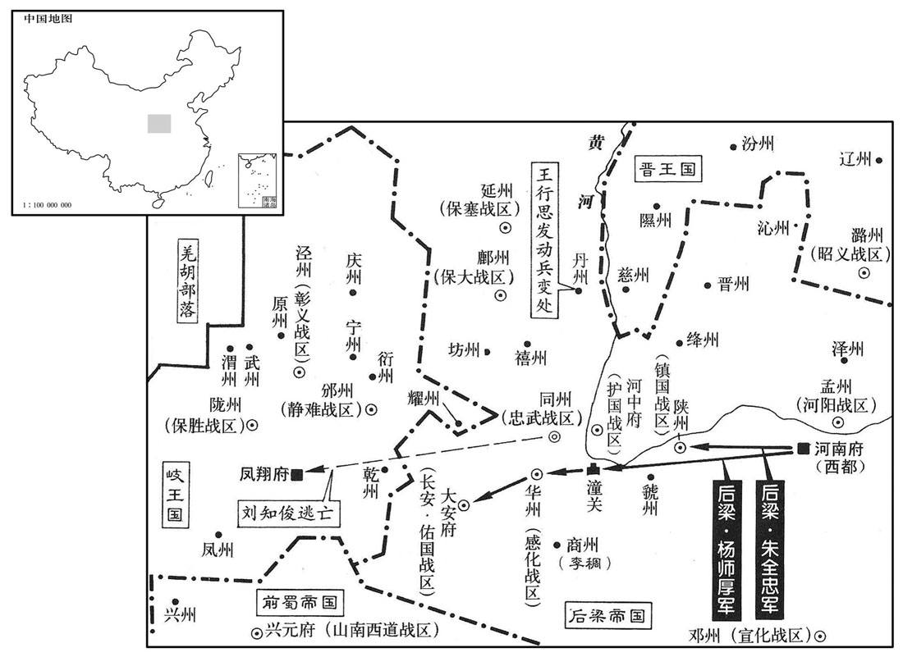
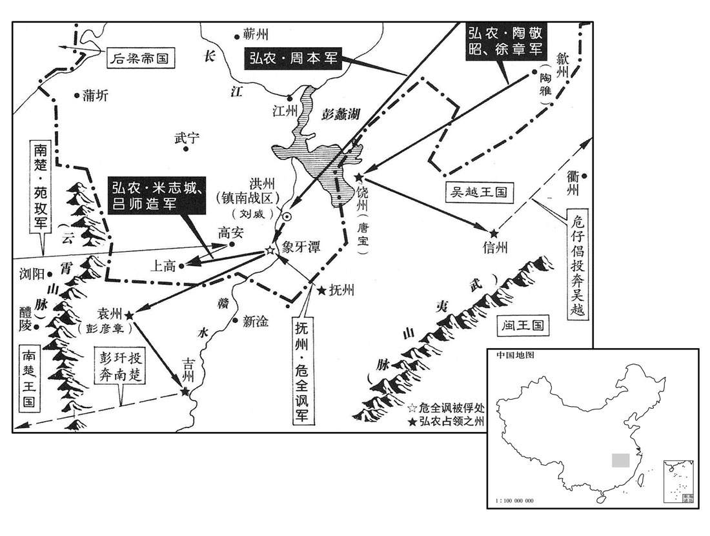
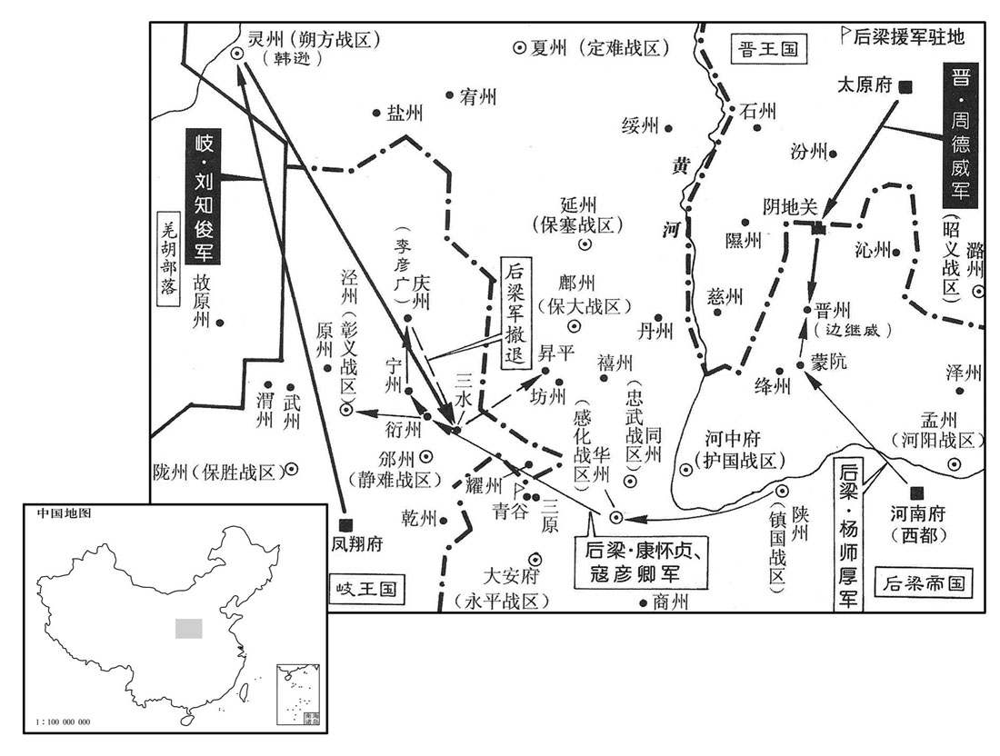
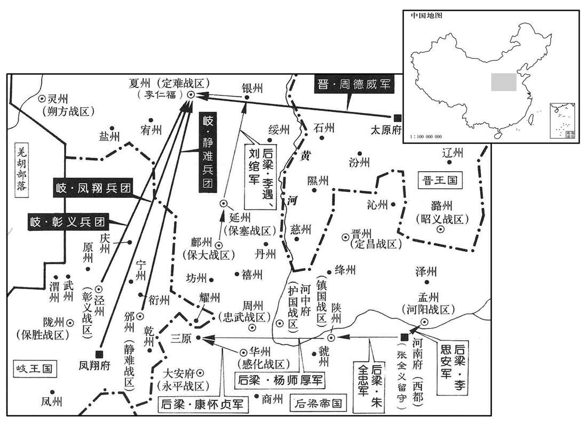
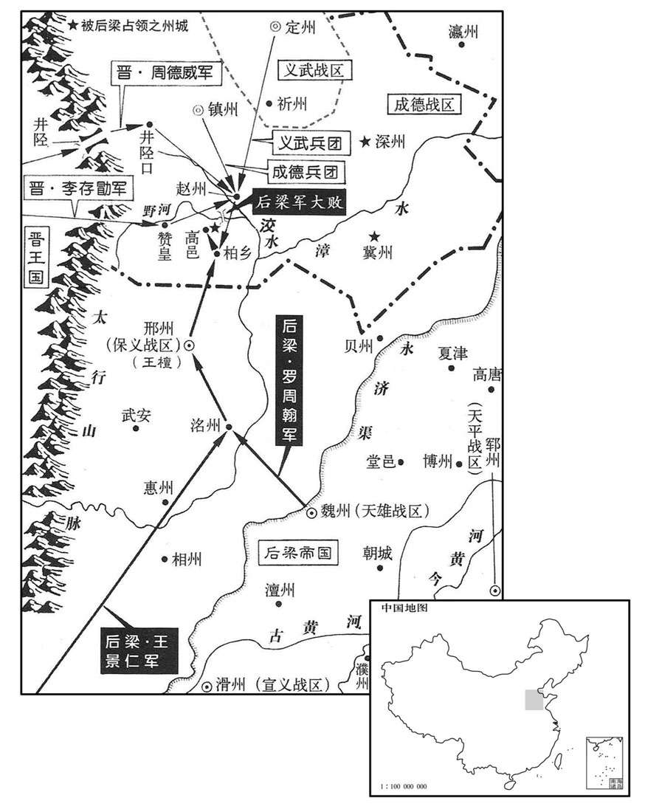
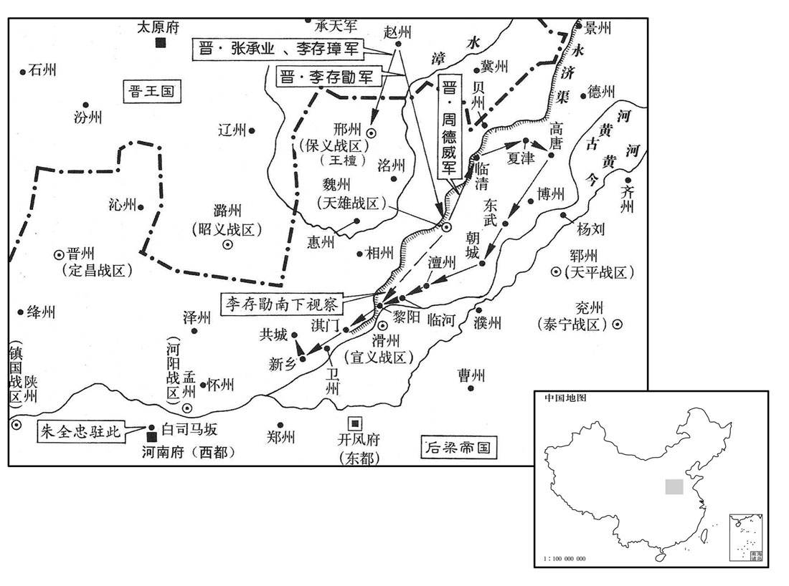
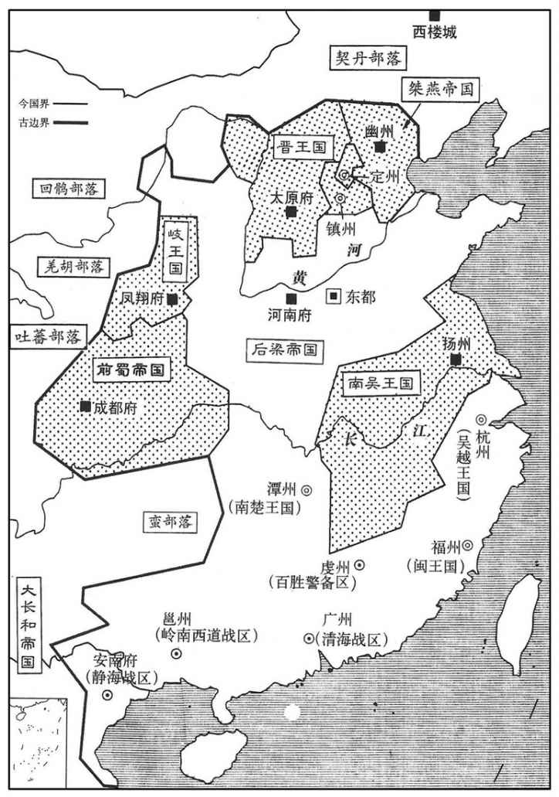
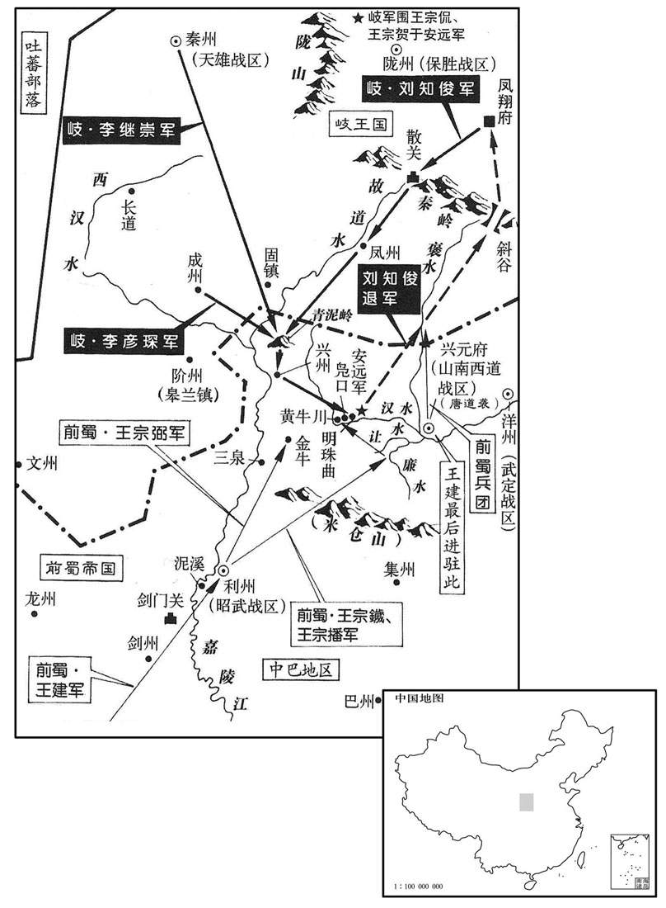
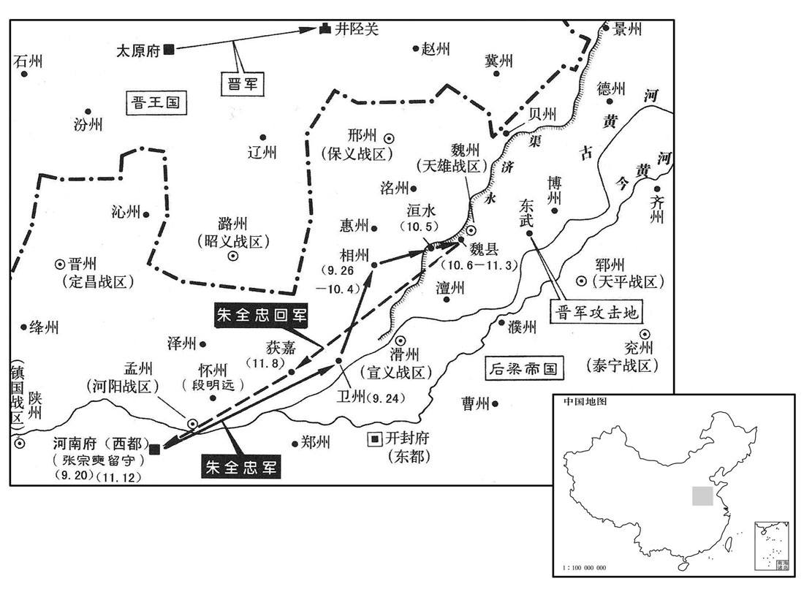

卷次与人物目录 / 卷267
资治通鉴 · 卷第二百六十七【后梁纪二】
公元908年至公元911年 · 原文、白话与胡三省注
本页按胡注本编排保存全卷内容。白话采用本站所据译本，未可靠对应的内容另列说明；事件标题用于定位，并非原书文字。
本卷共140段原文，138段有译文对应，2段缺译或待核对。
卷第二百六十七【后梁纪二】起着雍执徐（戊辰）八月，尽重光协洽（辛未）二月，凡二年有奇。
卷首原文与注释
太祖神武元圣孝皇帝中
公元908年 · 后梁太祖神武元圣孝皇帝开平二年
开平二年〔（戊辰、九〇八）〕
上传原文的注释括号有异常，字符原样保留；无法可靠划分的段落默认全文显示。
本年记事分属相邻卷，按原书顺序分别保留：第266卷 · 第267卷。
本年事件索引（现代整理）
- 吴越王钱镠遣王景仁赴大梁陈述攻取淮南之策
- 淮南军攻吴越苏州并夺东洲，陈璋等反击收复东洲
- 前蜀册立周氏为皇后
- 周德威、李嗣昭率军攻晋州，梁太祖亲自率军救援
- 高季昌屯兵汉口阻断楚贡，许德勋迫其请和；吕师周攻取岭南六州
- 王建册立张氏为贵妃、徐氏为贤妃及其妹为德妃
- 温韬聚众劫掠雍州并盗掘唐诸陵
- 王建在星宿山讲武，统率步骑三十万
- 梁太祖回到大梁
- 梁廷任刘隐兼领清海、静海节度使，刘隐留用使者赵光裔李殷衡
- 梁震拒绝高季昌幕府征辟，以白衣身份留作谋主
- 梁太祖应钱镠请求遣寇彦卿攻淮南，寇彦卿连战失利而还
- 定难节度使李思谏去世，其子李彝昌自领留后
- 刘守文率军攻幽州，刘守光请晋援兵后击败守文
- 梁廷令张策以刑部尚书致仕，任杨涉为相
- 保塞节度使胡敬璋去世，李继徽遣刘万子接镇延州
- 杨隆演派万全感间道赴晋、岐告知自己继位
- 梁太祖准备迁都洛阳
八月，吴越王镠遣宁国节度使王景仁奉表诣大梁，〔王茂章奔两浙，见二百六十五卷唐昭宣帝天佑三年。〕陈取淮南之策。景仁即茂章也，避梁讳改焉。〔帝曾祖讳茂琳。按薛史梁纪，元年六月，司天监上言，请改月辰内「戊」字为「武」，避讳也。〕
八月，吴越王钱派遣宁国节度使王景仁带着奏表前往大梁，陈述攻取淮南的计策。王景仁，即王茂章，因避后梁太祖曾祖朱茂琳名讳而改。
淮南遣步军都指挥使周本、南面统军使吕师造击吴越，九月，围苏州。吴越将张仁保攻常州之东洲，拔之。〔宋白曰：通州海门县东南，隔水二百余里，本东洲镇。〕淮南兵死者万余人。淮南以池州团练使陈璋为水陆行营都招讨使，帅柴再用等诸将救东洲，〔帅，读曰率。〕大破仁保于鱼荡，复取东洲。〔复，扶又翻。〕柴再用方战舟坏，长抬浮之，仅而得济。〔抬，所角翻。〕家人为之饭僧千人，再用悉取其食以犒部兵，〔为，于伪翻。饭，扶晚翻。犒，苦到翻。〕曰：「士卒济我，僧何力焉！」〔史言柴再用善养士卒而不惑于异端。〕
淮南派遣步军都指挥使周本、南面统军使吕师造进攻吴越，九月，包围苏州。吴越将领张仁保攻打常州的东洲，并把东洲夺取。淮南兵死了一万余人。淮南委任池州团练使陈璋为水陆行营都招讨使，统率柴再用等将领救援东洲，在鱼荡把张仁保打得大败，又夺回了东洲镇。柴再用正在战斗，船坏了，靠长矛浮托，才得渡过。家人为他施饭给一千名僧人，柴再用全部拿了这些饭食犒劳部兵，说：“士卒渡我上岸，僧人出了什么力呢！”
丙子，蜀立皇后周氏。后，许州人也。〔周氏盖蜀主建糟糠之妻也。〕
丙子（初八），蜀册立皇后周氏。周皇后是许州人。
晋周德威、李嗣昭将兵三万出阴地关，攻晋州，刺史徐怀玉拒守；帝自将救之，丁丑，发大梁，乙酉，至陕州。〔将，即亮翻。陕，式冉翻。〕戊子，岐王所署延州节度使胡敬璋寇上平关，〔金人疆域图：隰州石楼县有上平关。按延州东至隰州百三十里耳，胡敬璋盖渡河来寇也。〕刘知俊击破之。周德威等闻帝将至，乙未，退保隰州。〔九域志，晋州西北至隰州二百五十五里。〕
晋周德威、李嗣昭率兵三万出阴地关，进攻晋州，晋州刺史除怀玉抵御防守；后梁太祖亲自统率军队前去救援，丁丑（初九）从大梁出发，乙酉（十七日）到达陕州。戊子（二十日），岐王李茂贞所任命的延州节度使胡敬璋侵犯上平关，刘知俊把岐军打败。周德威等听说后梁太祖将要到达，乙未（二十七日）退兵保卫隰州。
荆南节度使高季昌遣兵屯汉口，〔汉口，汉水入江之口，其地在鄂州汉阳县东大别山下。〕绝楚朝贡之路；楚王殷遣其将许德勋将水军击之，至沙头，〔沙头即今江陵城南沙头市。〕季昌惧而请和。殷又遣步军都指挥使吕师周将兵击岭南，〔吕师周降马殷，见上卷元年。〕与清海节度使刘隐十余战，取昭、贺、梧、蒙、龚、富六州。〔蒙州，隋始安郡之隋化县，唐武德四年置南恭州，贞观二年更名蒙州。龚州，本汉猛陵县地，隋为永平郡武林县，唐贞观三年置燕州，七年移燕州于今州东，仍于燕州旧所置龚州。又武德四年以始安郡之龙平、豪静及苍梧郡之苍梧置富州。九域志，昭州东至贺州三百二十五里，南至梧州四百九十里，南稍斜至龚州五百五十里。宋开宝废富州，以龙平县隶昭州，在州东南百六十二里。熙宁五年废蒙州，以立山县隶昭州，在州南二百十二里。〕殷土宇既广，乃养士息民，湖南遂安。
荆南节度使高季昌派遣军队在汉口驻扎，断绝楚朝见进贡的道路；楚王马殷派遣他的部将许德勋率领水军前去攻打，到达沙头，高季昌畏惧，请求和解。马殷又派遣步军都指挥使吕师周率兵进攻岭南，与清海节度使刘隐打仗十余次，夺取昭、贺、梧、蒙、龚、富六州。马殷的疆域已经广阔，就使兵民得到休养生息，湖南于是安居乐业。
冬，十月，蜀主立后宫张氏为贵妃，徐氏为贤妃，其妹为德妃。张氏，郪人，宗懿之母也。〔郪，汉县，唐带梓州。〕二徐，耕之女也。〔徐耕见二百五十八卷唐昭宗大顺二年。为徐妃亡蜀张本。〕
冬季，十月，前蜀主王建册立后宫张氏为贵妃，徐氏为贤妃，徐氏的妹妹为德妃。张氏是县人，是太子王宗懿的母亲；二徐是徐耕的女儿。
华原贼帅温韬聚众嵯峨山，〔帅，所类翻。嵯，才何翻。峨，音俄。〕暴掠雍州诸县，唐帝诸陵发之殆徧。温韬传：韬在华原七年，唐诸陵在其境内者悉发掘之，取其所藏金宝。而昭陵最固，韬从埏道下，见宫室制度闳丽，不异人间。中为正寝，东西厢列石床，床上石函中为铁匣，悉藏前代图书，锺、王笔迹，纸墨如新，韬悉取之，遂传人间。惟干陵，风雨不可发。雍，于用翻。〕
本段缺少可靠对应白话，原文完整保留；未使用生成译文。
庚戍，蜀主讲武于星宿山，步骑三十万。〔宿，音秀。〕
庚戌（十二日），前蜀主王建在星宿山讲习武事，参加的步兵、骑兵有三十万人。
丁巳，帝还大梁。〔考异曰：编遗录在乙卯。今从实录、薛史。〕
丁巳（十九日），后梁太祖回大梁。
辛酉，以刘隐为清海、静海节度使，〔兼交、广二镇也。然刘氏终不能有安南。〕以膳部郎中赵光裔、右补阙李殷衡充官告使，隐皆留之。〔史言群雄割据，各收拾衣冠之冑以为用。〕光裔，光逢之弟；殷衡，德裕之孙也。
辛酉（二十三日），梁任命刘隐为清海、静海节度使，任命膳部郎中赵光裔、右补阙李殷衡充任官告使，刘隐把他们都留下了。赵光裔是赵光逢的弟弟；李殷衡是李德裕的孙子。
依政进士梁震，〔依政，秦蒲阳县，汉临邛县，后魏置蒲阳郡及依政县，唐属邛州。九域志，在州东南五十里。〕唐末登第，至是归蜀；过江陵，高季昌爱其才识，留之，欲奏为判官。震耻之，〔高季昌出于奴仆，故梁震耻为之僚属。〕欲去，恐及祸，乃曰：「震素不慕荣宦，明公不以震为愚，必欲使之参谋议，但以白衣侍樽俎可也，何必在幕府！」季昌许之。震终身止称前进士，不受高氏辟署。季昌甚重之，以为谋主，呼曰先辈。〔唐人呼进士为先辈，至今犹然。〕
邛州依政进士梁震，唐末考中进士，到这时候归蜀。路过江陵，高季昌喜爱他的才能见识，把他留下来，想要留下来，想要奏举他为判官。梁震以为耻辱，想要离开，又恐怕遭祸，于是说：“我向来不羡慕荣华官宦，您不认为我愚昧无知，一定要让我参与谋划计议，只以没有官职的平民侍奉宴席就是了，何必在幕府任职呢！”高季昌应允了他。梁震终身只称前进士，不接受高季昌的征召任命。高季昌很器重他，用他作谋主，呼为“先辈”。
帝从吴越王镠之请，以亳州团练使寇彦卿为东南面行营都指挥使，击淮南。十一月，彦卿帅众二千袭霍丘，〔帅，读曰率。〕为土豪朱景所败；〔败，补迈翻；下同。〕又攻庐、寿二州，皆不胜。淮南遣滁州刺史史俨拒之，彦卿引归。〔寇彦卿兵势已挫，而史俨河东健将，汴兵所畏也，故闻其至而退。〕
后梁太祖依从吴越王钱的请求，任命亳州团练使寇彦卿为东南面行营都指挥使，攻打淮南。十一月，寇彦卿率从二千人袭击霍丘，被地方豪强朱景打败；又攻打庐、寿二州，都没有取胜。淮南派遣滁州史史俨抵御寇彦卿，寇彦卿带兵退回。
定难节度使李思谏卒；〔难，乃旦翻。〕甲戍，其子彝昌自为留后。
定难节度使李思谏去世，甲戌（初六），他的儿子李彝昌自任留后。
刘守文举沧德兵攻幽州，刘守光求救于晋，晋王遣兵五千助之。丁亥，守文兵至卢〔【芦】〕台军，〔卢〔芦〕台军，宋为干宁军地。九域志：干宁军在沧州西北九十里。〕为守光所败；又战玉田，亦败。〔玉田，汉无终县，唐万岁通天元年更名玉田，属蓟州，在蓟州东南八十里，又东北至平州二百里，西至幽州三百里。亦败，读如字。〕守文乃还。〔还，从宣翻，又如字。〕
刘守文发沧德军队进攻幽州，刘守光向晋王请求救援，晋王李存勖派遣五千军队援助刘守光。丁亥（十九日）刘守文兵到达芦台军，被刘守光打败；又攻打玉田，也失败了。刘守文这才退回。
癸巳，中书侍郎、同平章事张策以刑部尚书致任；以左仆射杨涉同平章事。
癸巳（二十五日），后梁中书侍郎、同平章事张策以刑部尚书退休，任命左仆射杨涉为同平章事。
保塞节度使胡敬璋卒，静难节度使李继徽以其将刘万子代镇延州。〔保塞、静难二镇时皆属岐。〕
保塞节度使胡敬璋去世，静难节度使李继徽委任他的部将刘万子代镇延州。
是岁，弘农王遣军将万全感赍书间道诣晋及岐，告以嗣位。〔间，古苋翻。岐、晋，淮南之与国。〕
这一年，弘农王杨隆演派遣军将万全感带着书信由偏僻小路前往晋阳及岐州，把自己继承王位的事告诉晋王及岐王。
帝将迁都洛阳。
后梁太祖准备迁都洛阳。
译本中未与胡注本可靠对应的内容
以下另列供核对版本差异，不并入胡注本正文。
译本所附古文
[6]华原贼帅温韬聚从嵯峨山，暴掠雍州诸县，唐帝诸陵发之殆遍。
译本白话
华原贼帅温韬聚从嵯峨山，肆意抢劫雍州各县，唐帝的陵墓几乎全被发掘。
公元909年 · 后梁太祖神武元圣孝皇帝开平三年
三年〔（己巳、九〇九）〕
上传原文的注释括号有异常，字符原样保留；无法可靠划分的段落默认全文显示。
本年事件索引（现代整理）
- 梁太祖迁太庙神主至洛阳并亲赴新都祭祀大赦
- 梁廷因用度稍裕，开始向百官发放全俸
- 发生日食
- 刘万子暴虐失众并谋叛，李延实杀万子据延州，高万兴兄弟及翟州守将降梁
- 梁太祖自洛阳出发，命杨师厚兼任潞州四面招讨使
- 梁太祖到河中，发兵会合高万兴攻取丹州、延州
- 梁廷封朔方节度使韩逊为颍川王
- 丹州刺史崔公实请求归降后梁
- 徐温以金陵地势优越且战舰集中，遣李知诰赴升州经营
- 刘知俊移军攻延州，李延实据城坚守并分兵围坊州
- 梁廷封王审知为闽王、刘隐为南平王
- 刘知俊攻克延州，李延实投降
- 淮南军围攻苏州，孙琰以机具破解其洞屋攻城
- 司马福潜水穿过淮南军水网入苏州，促成城中与援军联系
- 吴越王钱镠重用园卒陆仁章，派其潜入苏州传递消息
- 吴越军内外夹击大破淮南军，擒将夺舰并追击周本
- 岐军将领李彦博、李彦昱弃城逃凤翔，严弘倚举鄜州降梁
- 淮南初设选举制度，由骆知祥主管
- 梁太祖命刘知俊乘胜攻邠州，刘以缺粮为由拒绝
- 梁太祖因王重师贡奉不及时而召其入朝，以刘捍代理佑国留后
- 梁太祖自河中出发返回洛阳
- 刘捍诬告王重师与邠岐暗通，梁太祖赐死重师并夷族
- 刘守文招契丹吐谷浑四万攻幽州，被刘守光击败并遭囚禁
- 刘知俊因畏惧梁太祖猜忌而据同州叛梁，遣使求岐晋援兵
- 韩逊奏报攻克盐州并斩岐将李继直
- 梁太祖遣使责问刘知俊叛变，命杨师厚、刘鄩率军讨伐
- 丹州王行思等发动叛乱，刺史宋知诲逃归
- 梁太祖自洛阳出发
- 刘鄩乘潼关守备疏忽突入关中并擒获刘知浣
- 刘嗣业持诏赴同州招谕刘知俊，刘知俊全族奔岐，梁军夺取长安
- 刘守光报捷并称将平定沧德、愿与晋王共同攻梁
- 危全讽自称镇南节度使，率抚信袁吉诸州军围攻洪州
- 徐温采纳严可求建议，任周本率军驰援高安
- 梁廷封刘守光为燕王
- 梁军攻克丹州，擒获叛将王行思
- 商州刺史李稠驱民西逃，被将吏追杀，李玟主持州务
- 梁廷将佑国军改名永平军
- 河东军侵犯晋州并掠至尧祠后撤
- 梁太祖自陕州返回洛阳后病倒
- 王班轻视襄州牙兵王求等，牙兵作乱杀班并转附前蜀
- 周本击溃危全讽军，俘五千人并连取袁吉等州，江西尽归淮南
- 梁太祖病情稍有好转，恢复临朝听政
- 梁廷任康怀贞为西路行营副招讨使
- 王建命太子王宗懿判六军并开设永和府
- 均州刺史张敬方奏报攻克房州
- 晋军攻晋州受挫，梁军杨师厚击退周德威援军
- 李洪进犯荆南，为高季昌所败，梁廷命陈晖会师讨伐
- 前蜀任王锴为中书侍郎、同平章事
- 陈晖攻克襄州，斩乱兵并擒杀李洪、杨虔
- 梁廷任王檀为潞州东面行营招讨使
- 刘守光遣子刘继威安抚沧州，梁廷任其为义昌留后
- 韩建、杨涉罢相，梁廷任赵光逢、杜晓为同平章事
- 淮南遣张知远赴闽修好，闽王王审知因其倨慢杀之并与淮南绝交
- 前蜀施行胡秀林进献的永昌历
- 湖州刺史高澧屠杀百姓后叛吴越归附淮南，钱镠派兵讨伐
- 梁太祖祭告圜丘并大赦
- 罗绍威患风痹请辞，梁太祖令其子罗周翰代理军府并慰问
- 岐王李茂贞令刘知俊攻灵州，梁军虽击退岐军却遭刘知俊伏击惨败
- 王彦章以双铁枪作战勇猛，人称王铁枪
- 前蜀王宗弁称疾辞官，拒绝受职并自言知足
- 刘守光围攻沧州，守城军民断粮至食人

本年形势与背景参考图

本年形势与背景参考图

本年形势与背景参考图
春，正月，己巳，迁太庙神主于洛阳。甲戍，帝发大梁。壬申，以博王友文为东都留守。〔梁以大梁为东都。〕己卯，帝至洛阳；庚寅，飨太庙；辛巳，祀圜丘，大赦。
春季，正月已巳（初三），后梁太祖把太庙的祖宗牌的位迁到洛阳。甲戌（疑误），太祖自大梁出发。壬申（初五），任命博王朱友文为东都留守。乙卯（十二日），太祖到达洛阳；庚寅（疑误），祭祀太庙；辛巳（疑误），祭祀上天，大赦天下。
丙申，以用度稍充，初给百官全俸。〔唐自广明丧乱以来，百官俸料额存而已，至是复全给。〕
丙申（二十九日），后梁由于费用开支逐渐充裕，开始发给文武百官全俸。
二月，丁酉朔，日有食之。
二月，丁酉朔（初一），发生日食。
保塞节度使刘万子暴虐，失众心，且谋贰于梁，李继徽使延州牙将李延实图之。延实因万子葬胡敬璋，攻而杀之，遂据延州。马军都指挥使河西高万兴与其弟万金闻变，以其众数千人诣刘知俊降。〔为高万兴兄弟取鄜、延张本。〕岐王置翟州于鄜城，〔后魏置敷城郡及敷城县，隋改曰鄜城，唐属坊州。九域志，县在鄜州东一百二十里。翟，徒历翻。〕其守将亦降。
保塞节度使刘万子凶恶残酷，失去众心，并且图谋背叛投降大梁，静难节度使李继徽派遣延州牙将李延实设法除掉他。李延实趁着刘万子埋葬胡敬璋，发动攻击并把他杀死，于是占据了延州。马军都指挥使河西高万兴与他的弟弟高万金听到这个变故，率领他的部众数千人到刘知俊的军营投降。岐王李茂贞在城设置翟州，守城的将领也投降了刘知俊。
三月，甲戍，帝发洛阳。以山南东道节度使杨师厚兼潞州四面行营招讨使。
三月，甲戌（初九），后梁太祖自洛阳出发。任命山南东道节度使杨师厚兼潞州四面行营招讨使。
庚辰，帝至河中，发步骑会高万兴兵取丹、延。〔宋白曰：丹州，秦上郡地，苻、姚时为三堡镇，后魏大统三年割鄜、延二州地置汾州，理三堡镇；废帝以河东汾州同名，改为丹州，因丹杨川以为名。延州，项羽以董翳为翟王，都高奴，即其地。魏灭赫连，以为统万镇，后为东夏州，后改延州。〕
庚辰（十五日），后梁太祖到达河中，征发步兵、骑兵会同高万兴的军队攻取丹州、延州。
丙戍，以朔方节度使兼中书令韩逊为颍川王。逊本灵州牙校，〔校，户教翻。〕唐末据本镇，朝廷因而授以节钺。
丙戌（二十一日），后梁太祖封朔方节度使兼中书令韩逊为颍川王。韩逊本是灵州牙校，唐末占据本镇，后梁因而授予旌节仪仗。
辛卯，丹州刺史崔公实请降。〔丹州，保塞军巡属。〕
辛卯（二十六日），丹州刺史崔公实请求投降。
徐温以金陵形胜，战舰所聚，〔舰，户黯翻。〕乃自以淮南行军副使领升州刺史，留广陵，以其假子元从指挥使知诰为升州防遏兼楼船副使，往治之。〔从，才用翻。治，直之翻。为徐知诰完理升州、徐温遂居之张本。〕
徐温认为金陵地势优越，战船聚集，于是自己以淮南行军副使兼领升州刺史，留驻广陵，任命他的养子元从指挥使徐知诰为州防遏兼楼船副使，前去治理州。
夏，四月，丙申朔，刘知俊移军攻延州，李延实婴城自守；知俊遣白水镇使刘儒分兵围坊州。〔后魏太和二年，分澄城置白水郡及县，隋废郡，以县属冯翊，唐属同州。九域志：在州西北一百二十里。〕
夏季，四月，丙申朔（初一），刘知俊转移军队攻打延州，李延实环城守御；刘知俊派遣白水镇使刘儒分兵包围坊州。
庚子，以王审知为闽王，刘隐为南平王。
庚子（初四），后梁太祖封彰武节度使王审知为闽王，清海、静海节度使刘隐为南平主。
刘知俊克延州，李延实降。〔降，户江翻。〕
刘知俊攻克延州，李延实投降。
淮南兵围苏州，推洞屋攻城，〔推，吐雷翻。洞屋，以木拄为之，冒以牛皮，其状如洞。〕吴越将临海孙琰置轮于竿首，垂焴投锥以揭之，攻者尽露，禄至则张网以拒之，〔焴，居登翻。揭，丘杰翻。禄，与炮同；匹貌翻。〕淮南人不能克。吴越王镠遣牙内指挥使钱镖、〔镖，甫招翻。〕行军副使杜建徽等将兵救之。
淮南军队包围苏州，推着用木架支撑、覆罩牛皮、形状如洞的洞屋攻城，吴越将领临海人孙琰在竹竿顶端安置滑轮，垂长索投锥把洞屋戳穿掀开，攻城的淮南军队便完全暴露了，炮石打来就张网拦阻，淮南军队不能攻克。吴越王钱派遣牙内指挥使钱镖、行军副使杜建徽等率兵救援苏州。
苏州有水通城中，淮南张网缀铃悬水中，鱼狍过皆知之。吴越游弈都虞候司马福欲潜行入城，故以竿触网；敌闻铃声举网，福因得过，凡居水中三日，乃得入城。由是城中号令与援兵相应，敌以为神。
苏州有水通城中，淮南军队张网挂铃悬在水中，鱼鳖通过都能知道。吴越游弈都虞候司马福欲潜水前行入城，故意用竿触网；淮南兵听到铃声举起网来，司马福因此能够通过，一共在水中待了三天，才得进入城里。从此，城中号令与援兵相应，淮南军队以为神奇莫测。
吴越王镠尝游府园，见园卒陆仁章树艺有智而志之；〔志者，记之于心。〕及苏州被围，〔被，皮义翻。〕使仁章通信入城，果得报而返。镠以诸孙畜之，〔畜，吁玉翻，养也。〕累迁两府军粮都监使，〔两府，镇海，镇东两节度府。〕卒获其用。〔卒，子恤翻。〕仁章，睦州人也。
吴越王钱曾经到府园游玩，看见园丁陆仁章种植花草树木有智谋，就记住了他；等到苏州被围，让陆仁章送信到城里，果然得到答复就回来了。钱把陆仁章收作孙子教养，屡次升到两府军粮都监使，终于派上用场。陆仁章是睦州人。
辛亥，吴越兵内外合击淮南兵，大破之，擒其将何朗等三十余人，夺战舰二百艘。〔艘，苏遭翻。〕周本夜遁，又追败之于皇天荡。〔此皇天荡非真州大江中之皇天荡。按宋熙宁三年平江府昆山县人郏亶上奏言水利，长洲县界有长荡、皇天荡，此则是也。败，补迈翻。〕锺泰章将精兵二百为殿，〔殿，丁练翻。〕多树旗帜于菰蒋中，〔菰，即蒋也。帜，昌志翻。〕追兵不敢进而还。〔还，从宣翻，又如字。〕
辛亥（十六日），吴越军队内外合击淮南军队，把他们打得大败，生擒淮南将领何朗等三十余人，夺取战般二百艘。周本乘夜逃走，吴越军队追到皇天荡又把周本打败。淮南钟泰章率领二百精兵走在队伍的最后，在菰草中竖立很多旗帜，吴越的追兵不敢前进而返回。
岐王所署保大节度使李彦博、〔考异曰：编遗录、五代史作「彦容」。今从刘恕广本。〕坊州刺史李彦昱皆弃城奔凤翔，鄜州都将严弘倚举城降。〔鄜，音夫。〕己未，以高万兴为保塞节度使，以绛州刺史牛存节为保大节度使。〔梁遂取鄜坊、丹延两镇。〕
岐王节茂贞任命的保大节度使李彦博、坊州刺史李彦昱都弃城逃往风翔，州都将严弘倚率城投降。已未（二十四日），后梁任命高万兴为保塞节度使，任命绛州刺史牛存节为保大节度使。
淮南初置选举，以骆知祥掌之。〔丧乱以来，选举之法废，杨氏能复置之，故书。〕
淮南开始建立选拔官吏的制度，任命骆知祥掌管。
五月，丁卯，帝命刘知俊乘胜取邠州；知俊难之，〔李继徽据邠州，有凤翔之援，故刘知俊以取之为难。〕辞以阙食，乃召还。
五月丁卯（初三），后梁太祖命令刘知俊乘胜攻取州。刘知俊认为难以攻取，以缺少军粮为借口推辞，于是将他召回。
佑国节度使王重师镇长安数年，帝在河中，怒其贡奉不时；己巳，召重师入朝，以左龙虎统军刘捍为佑国留后。
佑国节度使王重师镇守长安数年，后梁太祖在河中，对他不按时进贡感到恼怒。已巳（初五），召王重师到朝廷来，委任左龙虎统军刘捍为佑国留后。
癸酉，帝发河中；己卯，至洛阳。
癸酉（初九），后梁太祖自河中出发；已卯（十五日），回到洛阳。
刘捍至长安，王重师不为礼，捍谮之于帝，云重师潜与邠、岐通。甲申，贬重师溪州刺史，寻赐自尽，夷其族。〔为刘知俊杀刘捍以叛张本。〕
刘捍到长安，王重师不以礼相待，刘捍向后梁太祖中伤他，说王重师暗中与州、岐州互相往来。甲申（二十日），贬王重师为溪州刺史，不久赐令自尽，诛杀他的全族。
刘守文频年攻刘守光不克，〔刘守文自元年攻守光，事始见上卷。〕乃大发兵，以重赂招契丹，吐谷浑之众，合四万屯蓟州。守光逆战于鸡苏，〔按薛史梁纪，是年刘守光上言，于蓟州西与兄守文战，生禽守文。盖即鸡苏也。〕为守文所败。〔败，补迈翻。〕守文单马立于陈前，〔陈，读曰阵。〕泣谓其众曰：「勿杀吾弟。」守光将元行钦识之，直前擒之，〔刘守光以子囚父，天下之贼也。刘守文既声其罪而讨之，有诛无赦。小不忍以败大事，身为俘囚，自取之也。〕沧德兵皆溃。守光囚之别室，栫以藂棘，〔栫，才甸翻。藂，与丛同。〕乘胜进攻沧州。沧州节度判官吕兖、孙鹤推守文子延祚为帅，乘城拒守。兖，安次人也。〔安次，汉县，唐属幽州，在州东南一百三十里。帅，所类翻。〕
刘守文连年攻打刘守光不能攻下，于是大发兵，用重贿招致契丹、吐谷浑的兵众，合计四万人马驻扎蓟州。刘守光在鸡苏迎战，被刘守文打败。刘守文单马立在阵前，器着对他的部众说：“不要杀死我的弟弟。”刘守光的部将元行钦认淮刘守文，直冲向前反他擒住，沧德军队全部溃散。刘守光把刘守文囚禁别室，用丛棘堵塞，乘胜进攻沧州。沧州节度判官吕兖、孙鹤推举刘守文的儿子的刘延祚为帅，登城抗御防守。吕兖是安次人。
忠武节度使兼侍中刘知俊，〔去年更同州匡国军为忠武军，事见上卷。〕功名浸盛，以帝猜忍日甚，内不自安；及王重师诛，知俊益惧。帝将伐河东，〔河东，谓晋。〕急征知俊入朝，欲以为河东西面行营都统；且以知俊有丹、延之功，厚赐之。知俊弟右保胜指挥使知浣从帝在洛阳，密使人语知俊云：〔语，牛倨翻。〕「入必死。」又白帝，请帅弟侄往迎知俊，〔帅，读曰率。〕帝许之。六月，乙未朔，知俊奏「为军民所留」，遂以同州附于岐。〔考异曰：实录：「六月庚戍，知俊据本郡反，削夺官爵，兴师讨伐。」编遗录：「六月，乙未，初奏本道军民遮留，寻闻擒使臣及将送凤翔。」盖编遗据奏到之日，实录据削夺之日也。〕执监军及将佐之不从者，皆械送于岐。遣兵袭华州，逐刺史蔡敬思，〔九域志：同州南至华州七十里。华，户化翻。〕以兵守潼关。潜遣人以重利啖长安诸将，〔啖，徒滥翻。〕执刘捍，送于岐，杀之。知俊遣使请兵于岐，亦遣使请晋人出兵攻晋、绛，遗晋王书曰：「不过旬日，可取两京，复唐社稷。」〔遗，唯季翻。长安可以言取；梁都洛阳未易取也。〕
忠武节度使兼侍中刘知俊，功绩名声逐渐盛大，由于后梁太祖猜疑残忍日益厉害，内心里感到自己不安全；等到王重师被杀，刘知俊更加恐惧。太祖将要讨伐河东，紧急征召刘知俊到朝廷来，想要任命他担任河东西面行营都统。并且因为刘知俊有攻取丹州、延州的功劳，要重赏他。刘知俊的弟弟右保胜指挥使刘知浣跟随太祖在洛阳，秘密派人告诉刘知俊说：“到朝廷来一定死。”又禀告太祖，请求率领弟侄前去迎接刘知俊，太祖允许了他。六月，乙未朔（初一），刘知俊奏称“为军民所留”，于是带领同州军民归附岐王李茂贞。拘捕监军及不听从的将佐，全都戴上刑具押送凤翔。刘知俊派兵袭击华州，驱逐刺史蔡敬思，守卫潼关。暗中派人用重利引诱长安诸将，逮捕刘捍，送往凤翔，把他杀了。刘知俊派遣使者向岐王李茂贞请兵，也派使者前往晋阳请求出兵攻打晋州、绛州，送给晋王李存勖的信中说：“不过十天，可以攻取两京，恢复唐室社稷。”
丁未，朔方节度使韩逊奏克盐州，斩岐所署刺史李继直。〔唐末，盐州奏事专达朝廷，不隶灵夏。至是灵、盐遂复合为一镇。〕
丁未（十三日），朔方节度使韩逊奏报攻克盐州，斩岐王李茂贞任命的盐州刺史李继直。
帝遣近臣谕刘知俊曰：「朕待卿甚厚，何忽相负﹖」对曰：「臣不背德，〔背，蒲妹翻。〕但畏族灭如王重师耳。」帝复使谓之曰：〔复，扶又翻。〕「刘捍言重师阴结邠、岐，朕今悔之无及，捍死不足塞责。」〔塞，悉则翻。〕知俊不报。庚戍，诏削知俊官爵，以山南东道节度使杨师厚为西路行营招讨使，帅侍卫马步军都指挥使刘鄩等讨之。〔帅，读曰率。〕
后梁太祖派遣新近官员告谕刘知俊说：“朕待你甚厚，为什么忽然背弃？”刘知俊回答说：“我不会忘记恩德，只是畏惧像王重师那样被诛灭全族罢了。”太祖又派使者对他说：“刘捍说王重师暗中交结州、岐州，朕现在后悔不及，刘捍死了不足偿还罪责。”刘知俊没有答复。庚戌（十六日），太祖降诏革除刘知俊官职爵位，任命山南东道节度使杨师厚为西路行营招讨使，率领侍卫马步军都指挥使刘等讨伐刘知俊。
丹州马军都头王行思等作乱，刺史宋知诲逃归。
丹州马军都头王行思等发动叛乱，丹州刺史宋知诲逃回。
辛亥，帝发洛阳。
辛亥（十七日），后梁太祖自洛阳出发。
刘鄩至潼关东，获刘知俊伏路兵蔺如海等三十人，释之使为前导。〔刘知俊既得潼关，于关外沿路伏兵以候望，刘鄩反得而用之以为乡导。史照曰：蔺，姓也，其先韩献子玄孙曰康，食采于蔺，因氏焉。〕刘知浣迷失道，盘桓数日，乃至关下，关吏纳之。如海等继至，关吏不知其已被擒，亦纳之。〔被，皮义翻。〕鄩兵乘门开直进，遂克潼关，追及知浣，擒之。癸丑，帝至陕。〔陕，式冉翻。〕
刘到达潼关东，俘获刘知俊埋伏在路上侦察敌人的兵士蔺如海等三十人，把他们释放，让他们在前面当向导。刘知俊的弟弟刘知浣途中迷了路，徘徊数日，才到潼关下，关吏把他们放进关去。蔺如海等接着到了，关吏不知道他们已经被擒，也把他们放进关去。刘的军队趁着关门打开，径直前进，于是夺取了潼关，追上刘知浣，把他擒住。癸丑（十九日），后梁太祖到达陕州。
帝遣刘知俊侄嗣业持诏诣同州招谕知俊；知俊欲轻骑诣行在谢罪，弟知偃止之。杨师厚等至华州，知俊将聂赏开门降。〔聂，尼辄翻，姓也。史照曰：楚大夫食采于聂，因以为氏。〕知俊闻潼关不守，官军继至，苍黄失图，乙卯，〔【章：十二行本「卯」下有「夜」字；乙十一行本同；孔本同；张校同。】〕举族奔岐。杨师厚至长安，岐兵已据城，师厚以奇兵并南山急趋，自西门入，遂克之。〔并，步浪翻。按唐长安城十门，西南三门惟延平门近南山耳。长安既丘墟之余，且城大难守，使杨师厚不以奇兵入西门，岐兵亦不能久也。〕庚申，以刘鄩权佑国留后。岐王厚礼刘知俊，以为中书令。地狭，无藩镇处之，〔处，昌吕翻。〕但厚给俸禄而已。〔蹄涔不容尺鲤。为刘知俊奔蜀张本。〕
后梁太祖派遣刘知俊的侄子刘嗣业持诏前往同州招抚谕示刘知俊；刘知俊想要轻骑前往太祖的住地自认罪过，他的弟弟刘知偃阻止他。杨师厚等到达华州，刘知俊的部将聂赏打开城门投降。刘知俊听说潼关没有守住，官兵接连到来，匆忙慌张失去了主意，乙卯（二十一日）夜里，带领全族投奔岐州。杨师厚到长安，岐兵已经占据长安城，机师厚率奇兵沿南山急趋直下，自西门入城，于是攻占了长安。庚申（二十六日），委任刘代理佑国留后。岐王李茂贞对刘知俊厚礼相待，任命他为中书令。岐州地域狭窄，没有藩镇安置他，只是厚给俸禄罢了。
刘守光遣使上表告捷，且言「俟沧德事毕，为陛下扫平并寇。」〔为，于伪翻。河东，并州之地，时与梁为敌，故言并寇。〕亦致书晋王，云欲与之同破伪梁。〔刘守光反复梁、晋之间，自以为得计，不知乃所以速亡也。〕
刘守光派遣使者上表报捷，并且说“等到沧德事情完了，为陛下扫平并州敌寇”。刘守光也送信给晋王李存勖，说想要与他共同消灭伪梁。
抚州刺史危全讽自称镇南节度使，帅抚、信、袁、吉之兵号十万攻洪州。〔唐置镇南军于洪州，抚、袁、吉皆巡属也。危全讽自称节度，举兵以攻洪州，欲兼而有之。九域志：抚州西北至洪州二百九里。帅，读曰率。〕淮南守兵纔千人，将吏皆惧，节度使刘威密遣使告急于广陵，日召僚佐宴饮。全讽闻之，屯象牙潭，不敢进，〔象牙潭在抚州金溪县东北。〕请兵于楚；楚王殷遣指挥使苑玫〔苑，姓也。左传，齐有大夫苑何忌。玫，莫杯翻。〕会袁州刺史彭彦章围高安以助全讽。玫，蔡州人；〔玫，莫杯翻。〕彦章，玕之兄〔【章：十二行本「兄」下有「子」字；孔本同。】〕也。〔彭玕见二百六十有五卷唐昭宣帝天佑三年。〕
抚州刺史危全讽自称镇南节度使，率领抚、信、袁、吉四州的军队号称十万进攻洪州。淮南守兵才一千人，将吏都畏惧害怕，节度使刘威秘密派遣使者到广陵告急求援，自己每天召集属下将吏宴饮。危全讽听说这情况，驻扎在象牙潭，不敢前进，向楚请求增兵。楚王马殷派遣指挥使苑玫会同袁州刺史彭彦章包围高安来援助危全讽。苑玫是蔡州人；彭彦章是彭亲兄的儿子。
徐温问将于严可求，可求荐周本。乃以本为西南面行营招讨应援使，将兵七千救高安。本以前攻苏州无功，〔事见上四月。〕称疾不出，可求即其卧内强起之。〔强，其两翻。〕本曰：「苏州之役，敌不能胜我，但主将权轻耳。今必见用，愿毋置副贰乃可。」可求许之。本曰：「楚人为全讽声援耳，非欲取高安也。吾败全讽，〔败，补迈翻。〕援兵必还。」〔援兵，谓围高安之兵。还，从宣翻。〕乃疾趣象牙潭。〔趣，七喻翻。〕过洪州。刘威欲犒军，〔犒，苦到翻。〕本不肯留，或曰：「全讽兵强，君宜观形势然后进。」本曰：「贼众十倍于我，我军闻之必惧，不若乘其锐而用之。」
徐温向严可求询问将领人选，严可求荐举周本。于是，任命周本为西南面行营招讨应援使，率兵七千援救高安。周本以前攻苏州没有立功，声称有病不出，严可求到他的卧室内强迫他起来。周本说：“苏州这场战役，敌人不能战胜我，只是主将权轻罢了。今天一定要用我，希望不要设置副职才可。”严可求应允了他。周本说：“楚兵为危全讽声援罢了，不是要取高安。我打败危全讽，援兵必然撤回。”于是急速奔赴象牙潭。经过洪州，刘威想要犒劳军队，周本不肯停留，有人说：“危全调兵强，您应当观察形势然后再前进。”周本说：“贼众比我多十倍，我军听说这情况一定畏惧，不如乘他们锐气旺盛使用他们。”
秋，七月，甲子，以刘守光为燕王。
秋季，七月甲子（初一），后梁太祖封授刘守光为燕王。
梁兵克丹州，擒王行思。
后梁兵攻下丹州，生擒王行思。
商州刺史李稠驱士民西走，〔将奔蜀也。〕将吏追斩之，〔考异曰：薛史：「稠弃郡西奔，本州岛将吏以都牙校李玟权知州事。」欧阳史：「商州军乱，逐其刺史李稠，稠奔于岐。」实录：「丙寅，陕州奏商州刺史李稠弃郡逃出山谷。」又曰：「商州将吏以稠驱虏士庶西遁，追斩无遗，暂令都押牙李玟主州事。」今从之。〕推都押牙李玟主州事。
商州刺史李稠驱赶士民向西逃跑，商州将吏追赶并把他们斩杀，推举商州都押牙李玟主持州事。
庚午，改佑国军曰永平。〔开平元年徙佑国军于长安，今改曰永平。〕
庚午（初七），后梁太祖改佑国军为永平。
河东兵寇晋州，抄掠至尧祠而去。〔尧都平阳，有祠在汾城东十里东原上。平阳，唐为临汾县，晋州所治也。〕
河东军队进犯晋州，抄没抢掠到达尧祠而离去。
癸酉，帝发陕州；乙亥，至洛阳，寝疾。
癸酉（初十），后梁太祖自陕州出发；乙亥（十二日），回到洛阳，患病卧床。
初，帝召山南东道节度使杨师厚，欲使督诸将攻潞州，以前兖海留后王班为留后，镇襄州。〔考异曰：薛史作「王珏」，今从实录。〕师厚屡为班言牙兵王求等凶悍，宜备之，〔为，于伪翻。〕班自恃左右有壮士，不以为意，每众辱之。戊寅，㻙求戍西境，是夕，作乱，杀班，推都指挥使雍丘刘閗为留后；〔雍，于用翻。閗，区里翻。〕閗伪从之，明日，与指挥使王延顺逃诣帝所。〔考异曰：姚顗明宗实录，薛史閗传皆云：「翌日受贺，衙庭享士，伏甲幕下，中筳尽斩其乱将以闻，以功为复州刺史。」按梁祖实录：「八月丁酉赐閗，王延顺物，以其违逆将之难来归。」编遗录斩李洪等敕云：「始扶刘閗，既奔窜以归明。」若使閗翌日便斩乱将，襄州何由至九月始收复！盖閗脱身归朝，及梁亡入唐，妄云斩乱将自夸大，史官不能考察，从而书之耳。〕乱兵奉平淮指挥使李洪为留后，附于蜀。未几，房州刺史杨虔亦叛附于蜀。〔几，居岂翻。〕
当初，后梁太祖召山南东道节度使杨师厚，想要让他督率诸将攻打潞州，委任前兖海留后王班为山南东道留后，镇守襄州。杨师厚屡次对王班说牙兵王求等凶猛强悍，应当防备他们，王班自恃左右有壮士，不以为意，往往当众侮辱他们。戊寅（十五日），把王求流放到西部边境戍守，当天晚上，王求等发动叛乱，杀王班，推举都指挥使雍丘人刘为留后；刘假装依从他们，第二天，与指挥使王延顺逃往后梁太祖那里。乱兵拥奉平淮指挥使李洪为留后，归附前蜀主王建。过了不久，房州刺史杨虔也叛梁附蜀。
危全讽在象牙潭，营栅临溪，亘数十里。〔亘，居邓翻。〕庚辰，周本隔溪布陈，〔陈，读曰阵。〕先使羸兵尝敌；〔羸，伦为翻。尝，试也。〕全讽兵涉溪追之，本乘其半济，纵兵击之；全讽兵大溃，自相蹂藉，〔蹂，忍久翻，又如又翻。藉，慈夜翻。〕溺水死者甚众，本分兵断其归路，〔断，音短。〕擒全讽及将士五千人。乘胜克袁州，执刺史彭彦章，进攻吉州。〔九域志：袁州南至吉州三百一十五里。〕歙州刺史陶雅使其子敬昭及都指挥使徐章将兵袭饶、信，信州刺史危仔倡请降，〔唐僖宗中和二年，危全讽据抚州，仔倡据信州，至是皆亡。〕饶州刺史唐宝弃城走。行营都指挥使米志诚、都尉吕师造等败苑玟于上高。〔败，补迈翻。〕吉州刺史彭玕帅众数千人奔楚，〔唐昭宗天佑三年彭玕附楚。〕楚王殷表玕为郴州刺史，〔郴，丑林翻。〕为子希范娶其女。〔为，于伪翻。〕淮南以左先锋指挥使张景思知信州，遣行营都虞侯骨言将兵五千送之。〔骨，姓也。唐初有骨仪。〕危仔倡闻兵至，奔吴越，吴越王镠以仔倡为淮南节度副使，更其姓曰元氏。〔欧史十国世家曰：钱镠恶危姓，更之曰元。更，工衡翻。〕危全讽至广陵，弘农王以其尝有德于武忠王，释之，资给甚厚。〔杨行密谥武忠。时淮南诸将议曰：「昔先王攻赵锽，全讽屡饟给吾军。」乃释之。〕八月，虔州刺史卢光稠以州附于淮南。于是江西之地尽入于杨氏。光稠亦遣使附于梁。
危全讽在象牙潭，临溪营建栅栏，连绵数十里。庚辰（十七日），周本隔着溪水列阵，先派瘦弱兵卒挑战试敌；危全讽的军队徒步渡溪追赶，周本乘他们渡到一半，发兵攻击；危全讽的军队大败，自相践踏，溺水死的人很多，周本分兵断绝他们的归路，生擒危全讽及将士五千人。周本率兵乘胜攻克袁州，逮住袁州刺史彭彦章，进攻吉州。歙州刺史陶雅派他的儿子陶敬昭及都指挥使徐章率兵袭击饶州、信州，信州刺史危仔倡请求投降，饶州刺史唐玉弃城逃走。行营都指挥使米志诚、都尉吕师造等在上高打败苑玫。吉州刺史彭率众数千人逃奔到楚，楚王马殷上表委任彭为郴州刺史，并为自己的儿子马希范娶彭的女儿为妻。淮南委任左先锋指挥使张景思为信州刺史，派遣行营都虞候骨言率兵五千人送他赴任。危仔倡听说淮南军队到了，逃奔吴越，吴越王钱任命危仔倡为淮南节度副使，改他的姓为元氏。危全讽到广陵，弘农王杨隆演以他曾经对武忠王杨行密有恩德，把他释放，供给很丰厚。八月，虔州刺史卢光稠率州归附淮南。于是，江西之地尽为杨氏所有。卢光稠也派遣使者向后梁称臣归附。
甲寅，上疾小瘳，始复视朝。〔自七月乙亥寝疾，至是凡四十日。朝，直遥翻；下同。〕
甲寅（二十一日），后梁太祖病稍愈，开始恢复临朝听政。
以镇国节度使康怀贞为西路行营副招讨使。
后梁任命镇国节度使康怀贞为西路行营副招讨使。
蜀主命太子宗懿判六军，开永和府，妙选朝士为僚属。
前蜀主王建命太子王宗懿管领六军，设置永和府，精选朝中官吏担任属官。
辛酉，均州刺史张敬方奏克房州。〔杨虔以房州附蜀见上。九域志：均州南至房州二百一十五里。〕
辛酉（二十八日），均州刺史张敬方奏报攻克房州。
岐王欲遣刘知俊将兵攻灵、夏，〔夏，户雅翻。〕且约晋王使攻晋、绛。晋王引兵南下，先遣周德威等将兵出阴地关攻晋州，刺史边继威悉力固守。晋兵穿地道，陷城二十余步，城中血战拒之，一夕城复成。诏杨师厚将兵救晋州，周德威以骑扼蒙坑之险，〔蒙坑在汾水东，东西三百余里，蹊径不通。〕师厚击破之，进抵晋州，晋兵解围遁去。〔考异曰：实录云：「杀戮生禽贼将萧万通等，贼由是弃寨而遁。」庄宗实录云：「汴军至蒙坑，周德威逆战，败之，斩首二百级，师厚退绛州。是役也，小将萧万通战没，师厚进营平阳，德威收军而退。」二军各言胜捷，然既杀萧万通，师厚何肯退保绛州！既败而退，岂得复进营平阳！德威既战胜，安肯便收军！盖晋军实败走，庄宗实录妄言耳。〕
岐王李茂贞想要派遣刘知俊率领军队攻灵州、夏州，并且约晋王李存勖让他进攻晋州、绛州。李存勖率兵南下，先派遣周德威等率领军队出阴地关进攻晋州，晋州刺史边继威全力固守。晋兵挖穿地道，城墙塌陷二十余步，城中军队血战抵御，一个晚上城墙又修好。后梁太祖诏令杨师厚率兵救援晋州，周德威用骑兵据守地势险要的蒙坑，杨师厚把他们打败，进抵晋州，晋兵解除包围逃走。
李洪寇荆南，高季昌遣其将倪可福击败之。〔败，补迈翻。〕诏马步都指挥使陈晖将兵会荆南兵讨洪。
山南东道留后李洪侵犯荆南，荆南节度使高季昌派遣他的部将倪可福把李洪打败。后梁太祖诏令马步都指挥使陈晖率领军队会同荆南兵讨伐李洪。
蜀主以御史中丞王锴为中书侍郎、同平章事。〔锴，苦骇翻。〕
前蜀主王建任命御史中丞王锴为中书侍郎、同平章事。
陈晖军至襄州，李洪逆战，大败，王求死。九月，丁酉，拔其城，斩叛兵千人，执李洪、杨虔等送洛阳，斩之。
后梁马步都指挥使陈晖率兵到达襄州，李洪迎战，被打得大败，牙兵王求战死。九月丁酉（初五），攻占襄州，斩叛兵一千人，生擒李洪、杨虔等押送洛阳，把他们斩首。
丁未，以保义节度使王檀为潞州东面行营招讨使。
丁未（十五日），后梁任命保义节度使王檀为潞州东面行营招讨使。
刘守光奏遣其子中军兵马使继威安抚沧州吏民；戊申，以继威为义昌留后。
刘守光奏报派遣他的儿子中军兵马使刘继威安抚沧州官吏平民。戊申（十六日），委任刘继威为义昌留后。
辛亥，侍中韩建罢守太保，左仆射、同平章事杨涉罢守本官。以太常卿赵光逢为中书侍郎，翰林奉旨工部侍郎杜晓为户部侍郎，并同平章事。〔梁改翰林承旨为翰林奉旨，以庙讳诚，避嫌讳也。然「诚」字与「承」字各自翻切不同。〕晓，让能之子也。〔杜让能死国难见二百五十九卷唐昭宗景福二年。〕
辛亥（十九日），韩建罢侍中知政事之职而拜太保，左仆射、同平章事杨涉罢同平章事之职任仆射本官。任命太常卿赵光逢为中书侍郎，翰林奉旨、工部侍郎杜晓为户部侍郎，都为同平章事。杜晓是杜让能的儿子。
淮南遣使者张知远修好于福建；〔好，呼到翻。〕知远倨慢，闽王审知斩之，表上其书，〔上，时掌翻。〕始与淮南绝。审知性俭约，常蹑麻屦，〔蹑，尼辄翻。〕府舍卑陋，未尝营葺。宽刑薄赋，公私富实，境内以安。岁自海道登、莱入贡，没溺者什四五。〔自福建入贡大梁，陆行当由衢、信取饶、池界渡江，取舒、庐、寿渡淮，而后入梁境。然自信、饶至庐、寿皆属杨氏，而朱、杨为世仇，不可得而假道，故航海入贡。今自福州洋过温州洋，取台州洋过天门山入明州象山洋，过涔江，掠洌港，直东北渡大洋抵登、莱岸，风涛至险，故没溺者众。〕
淮南派遣使者张知远到福建建立友好关系。张知远骄横傲慢，闽王王审知把他杀了，并上表把淮南的书信进呈给后梁太祖，后梁开始与淮南断绝关系。王审知生性俭朴，常穿麻鞋，官府房屋低下简陋，未曾修葺。刑罚宽大，赋税轻薄，公家私人都富裕充实，境内因此安定。每年由海道经登州、莱州进贡物品到大梁，有十之四五的人在海上淹没溺死。
冬，十月，甲子，蜀司天监胡秀林献永昌历，行之。〔欧阳修曰：永昌历止行于其国，今亡，不复见。
本段缺少可靠对应白话，原文完整保留；未使用生成译文。
湖州刺史高澧性凶忍，尝召州吏议曰：「吾欲尽杀百姓，可乎﹖」吏曰：「如此，租赋何从出﹖当择可杀者杀之耳。」时澧纠民为兵，有言其咨怨者，澧悉集民兵于开元寺，〔开元寺今诸州间亦有之，盖唐开元中所置也。〕绐云犒享，入则杀之；死者踰半，在外者觉之，纵火作乱。澧闭城大索，〔索，山客翻。〕凡杀三千人。吴越王镠欲诛之，戊辰，澧以州叛附于淮南，〔高澧父子以一州之地，介居钱、杨之间，率两附以自存，为日久矣，今专附淮南，钱氏之兵至矣。〕举兵焚义和临平镇，〔九域志：杭州仁和县有临平镇。按仁和县本钱塘县，宋朝太平兴国初改钱塘县曰仁和。盖亦先有义和地名，又避太宗藩邸旧名，遂改曰仁和也。〕镠命指挥使钱镖讨之。
湖州刺史高澧性情凶暴残忍，曾经召集州吏商议说：“我想要把百姓全部杀死，可以吗？”州吏说：“这样做，田租赋税从哪里出？应当只是选择可以杀的人把他杀死罢了。”当时高澧纠集百姓当兵，有人说他们叹息抱怨，高澧把民兵全部集中到开元寺，欺骗说是犒劳款待，进入寺内就把他们杀死；杀死的人超过一半，在寺外的人发觉了，放火作乱。高澧关闭城门大肆搜索，总共杀了三千人。吴越王钱想要杀死他，戊辰（初六），高澧率州叛变归附淮南，发兵焚烧义和临平镇，钱命令指挥使钱镖前去讨伐他。
十一月，甲午，帝告谢于圜丘；〔告谢者，告天而谢得天下也。按欧史，是日，日南至，徐无党注曰：不曰有事于南郊，盖比南郊礼差简。〕戊戍，大赦。
十一月甲午（初二），后梁太祖到南郊天坛告谢上天。戊戌（初六），大赦天下。
邺王罗绍威得风痹病，〔痹，必至翻。〕上表称：「魏故大镇，多外兵，愿得有功重臣镇之，臣乞骸骨归第。」帝闻之，抚案动容。〔抚案动容，非矜罗绍威之病也。魏博大镇，世袭者百五十年，一旦委镇请代，出于意料之表，喜溢于中，不知手之抚、容之动也。〕己亥，以其子周翰为天雄节度副使，知府事。谓使者曰：「亟归语而主：〔亟，纪力翻，急也。语，牛倨翻。而，汝也。〕为我强饭！〔为，于伪翻。强，其两翻。饭，扶晚翻。〕如有不可讳，〔谓死也。〕当世世贵尔子孙以相报也。今使周翰领军府，尚冀尔复愈耳。」〔考异曰：梁功臣列传：「朝廷自开创，有大事皆降使咨访。绍威有谋虑，亦驰简献替。或中途相遇，意互合者十得五六。太祖叹曰：『竭忠力一人而已。』又曰：「子三人：长廷规，司农卿，尚安阳公主，又尚金华公主，早卒；次周翰，起复云麾将军，充天雄节度留后，寻检校司徒，正授魏博节度使，亦早卒；次曰周敬。」薛史亦同。实录：「己亥，以司门郎中罗廷规充魏博节度副使，知府事，仍改名周翰。时邺王绍威病日甚，虑以后事，故奏请焉。」庄宗列传：「绍威卒，温以其子周翰嗣政。」庄宗实录：「绍威厚率重敛，倾府藏以奉温，小有违忤，温即遣人诟辱。绍威方怀愧耻，悔自弱之谋，乃潜收兵市马，阴有覆温之志，而赂温益厚。温怪其曲事，虑蓄奸谋而莫之察，乃赐绍威妓妾数人，皆承嬖爱，未半岁，温却召还，以此得其阴事。」内相予楯。薛史又云：「开平四年夏，诏金华公主出家为尼，居于宋州玄静寺。盖太祖推恩于罗氏，令终其妇节也。」唐余录、欧阳史皆同，惟唐庄宗实录独异。按均帝时赵岩等言「罗绍威前恭后倨，太祖每深含怒」，似与此言合。然梁祖若闻绍威有阴谋，必不使周翰更居魏。疑后唐史以绍威与梁最亲，疾之，而载此传闻之语。今从众书。廷规更名周翰，亦恐实录之误。〕
邺王罗绍威得了风痹病，上表称：“魏州原是大镇，多数是外来的兵士，希望得到有功劳的重要大臣镇守，我乞求辞官回家。”后梁太祖听到这些话，不禁抚案动容。已亥（初七），后梁太祖任命他的儿子罗周翰为天雄节度副使，负责节度使府事务。并对罗绍威的使者说：“赶快回去告诉你的主子：为我努力加餐！如有不测，当使你的子孙世世代代永居高位来作报答。现在派罗周翰前去典领军府事务，还希望你恢复健康啊。”
岐王欲取灵州以处刘知俊，〔处，昌吕翻。〕且以为牧马之地，使知俊自将兵攻之。朔方节度使韩逊告急；〔【章：十二行本「告」上有「遗使」二字；乙十一行本同；孔本同；张校同；退斋校同。】〕诏镇国节度使康怀贞、感化节度使寇彦卿将兵攻邠宁以救之。怀贞等所向皆捷，克宁、衍二州，拔庆州南城，刺史李彦广出降。〔宁、庆、衍三州皆静难军巡属，岐地也。周显德五年废衍州为定平镇，隶汾州。九域志：熙宁五年以汾州定平县隶泾州，在州南六十里。〕游兵侵掠至泾州之境，刘知俊闻之，十二月，己丑，解灵州围，引兵还。帝急召贞等还，遣兵迎援于三原青谷；怀贞等还，至三水，〔三水，汉古县，唐属邠州。九域志：在州东北六十里。〕知俊遣兵据险邀之，〔薛史曰：知俊邀击怀贞等于邠州长城岭。〕左龙骧军使寿张王彦章力战，〔五代会要曰：开平元年改左、右亲随军将马军为左、右龙骧军。〕怀贞等乃得过。怀贞与裨将李德遇、许从实、王审权分道而行，皆与援兵不相值，至升平，〔唐天宝十二载分宜君置升平县，属坊州。〕刘知俊伏兵山口，怀贞大败，仅以身免，德遇等军皆没。岐王以知俊为彰义节度使，镇泾州。
岐王李茂贞想要攻取灵州来安置刘知俊，并且把灵州作为放牧马匹的地方，让刘知俊亲自带兵去攻打灵州。朔方节度使韩逊派遣使者告急，后梁太祖诏令镇国节度使康怀贞、感化节度使寇彦卿率领军队攻打州、宁州来救助灵州。康怀贞等打到哪里都取得胜利，攻克宁、衍二州，夺取庆州南城，庆州刺史李彦广出城投降。游兵侵犯抢掠到达泾州的边境。刘知俊听说这情况，十二月已丑（二十八日），解除对灵州的包围，带兵回去了。后梁太祖急召康怀贞等回去，派遣军队在三原县青谷接应援助。康怀贞等回师，到达三水，刘知俊派遣军队占据险要进行拦击，左龙骧军使寿张人王彦章奋力作战，康怀贞等才得以通过。康怀贞与副将李德遇、许从实、王审权分道前进，都与援兵没有相遇，到达升平，刘知俊在山口埋伏军队，康怀贞大败，仅以自身得免，李德遇等军全部覆灭。岐王李茂贞委任刘知俊为彰义节度使，镇守泾州。
王彦章骁勇绝伦，〔骁，坚尧翻。〕每战用二铁枪，皆重百斤，一置鞍中，一在手，所向无前，时人谓之王铁枪。
王彦章勇猛强悍，没有人可以与他相比，每次作战都用两杆铁枪，各重一百斤，一杆放在马鞍上，一杆拿在手里，所向无敌，当时人们称他为“王铁枪”。
蜀蜀州刺史王宗弁称疾，罢归成都，杜门不出。〔王宗弁，鹿弁也，蜀主养以为子，赐姓名。〕蜀主疑其矜功怨望，加检校太保，固辞不受，谓人曰：「廉者足而不忧，贪者忧而不足。吾小人，致位至此足矣，岂可求进不已乎！」蜀主嘉其志而许之，赐与有加。〔宗弁之祈闲，以蜀主之雄猜也。〕
前蜀蜀州刺史王宗弁声称有病，罢官回到成都，闭门不出。前蜀主王建怀疑他居功自傲心怀怨恨，给他加官检校太保，他坚决推辞不接受，对别人说：“廉洁的人知足而没有忧愁，贪婪的人忧愁而不知足。我是个小人物，官位到此就满足了，哪里能要求提升不止呢！”王建赞许他的志向并应允了他，赏赐增多。
刘守光围沧州久不下，〔刘守光自五月攻沧州。〕执刘守文至城下示之，犹固守。城中食尽，民食菫泥，军士食人，驴马相噉鬃尾。〔噉，徒滥翻。鬃，子红翻。〕吕兖选男女羸弱者，饲以曲裇而烹之，〔羸，伦为翻。饲，祥吏翻。曲，丘六翻，酒母。裇，眠见翻，麦粉。〕以给军食，谓之宰杀务。
刘守光围攻沧州很久没有攻下，把刘守文押解到城下给城中的人观看，城中将士仍然固守。城中吃的东西全完了，百姓吃胶泥，兵士吃人，驴马互相吃鬃尾。沧州节度判官吕兖挑选瘦弱的男人、女人，给他们吃酒曲麦粉，然后煮来供给军士食用，把这叫做“宰杀务”。
译本中未与胡注本可靠对应的内容
以下另列供核对版本差异，不并入胡注本正文。
译本所附古文
[47]冬，十月，甲子，蜀司天监胡秀林献《永昌历》，行之。
译本白话
冬季，十月甲子（初二），前蜀司天监胡秀林呈献《永昌历》，在前蜀通行。
公元910年 · 后梁太祖神武元圣孝皇帝开平四年
四年〔（庚午、九一〇）〕
上传原文的注释括号有异常，字符原样保留；无法可靠划分的段落默认全文显示。
本年事件索引（现代整理）
- 刘延祚出城投降，刘守光任张万进、周知裕镇守沧州
- 吕琦年幼被赵玉救出刑场，后逃生力学获晋王任为代州判官
- 梁廷任卢光稠为镇南留后
- 刘守光为父刘仁恭请致仕，随后又暗杀兄长刘守文
- 万全感自岐返回广陵，杨隆演获加中书令并赦境内
- 高澧向淮南求援，逃奔吴国，钱镠巡湖州并任钱镖为刺史
- 前蜀太子王宗懿与唐道袭结怨，王建调唐道袭离蜀并更换枢密使
- 夏州都指挥使高宗益作乱杀李彝昌，李仁福被推为帅并获任节度使
- 梁太祖以瑞麦不及丰年为祥，罢免朱友谅并改任朱友能
- 梁廷以华温琪守晋州有功，置定昌军并任其节度使
- 寇彦卿在天津桥杀民，崔沂弹劾后梁廷贬其官职
- 徐温母亲去世，禁止以民力制作焚烧偶人；徐温起复领军职
- 王建拒绝李茂贞索取巴剑二州，改以财货相赠
- 梁廷任刘继威为义昌节度使
- 天雄节度使罗绍威去世，子罗周翰继任留后
- 冯行袭病重请代，李珽安抚许州牙兵并接管军府，冯行袭去世
- 马殷获封天策上将并开府，楚军攻荆南为高季昌击败
- 吴将敖骈围攻彭瑊，楚军救援并俘获敖骈
- 前蜀宰相韦庄去世
- 钱镠替避祸到吴越的唐宦官求情，梁太祖令暂留吴越
- 岐王、邠帅、泾帅与晋王合兵围攻夏州李仁福
- 梁廷任刘守光兼领义昌节度使
- 梁太祖听闻镇州王镕与晋暗通，开始担忧镇定难制
- 李仁福向梁廷告急，梁太祖部署援军并亲赴陕州应对晋军
- 钱镠修筑捍海石塘、扩建杭州城，杭州因而富庶
- 梁太祖由陕州返洛阳后病情复发
- 晋、岐军围攻夏州后解围撤军
- 梁军屯泽州谋取上党
- 钱镠命沈行思留守湖州，沈行思杀陈緕并欲刺盛师友后被处斩
- 梁廷任王景仁为北面行营都指挥招讨使，命其进驻魏州
- 王建改太子王宗懿名为王元坦，并册封诸子及养子为王
- 王建的诸多养子多为功臣，只有少数是亲生或宗族子弟
- 梁太祖病稍愈后在伊水洛水间校猎
- 梁太祖疑赵王王镕与晋通谋，派魏博兵假称助防而进驻深冀
- 赵王王镕得知梁将杜廷隐等袭杀驻守赵军，遂命石公立攻其军并向燕晋求援
- 晋王拒绝诸将对王镕求救的疑虑，派周德威出井陉援赵
- 刘守光拒绝孙鹤劝说出兵救赵，镇定恢复唐天祐年号
- 梁廷因司天预报不利外征而召回王景仁等，后闻晋赵合兵再令出战
- 卢光稠去世，子卢延昌继掌虔州并接受吴廷任命，吴暗中部署图取虔州
- 前蜀任周庠、庾传素为中书侍郎同平章事
- 梁朝颁行李燕等修订的律令格式
- 王景仁率梁军进军柏乡
- 前蜀大赦并将次年改元永平
- 赵王王镕再次告急，李存勖与周德威会合并自赞皇东进
- 李存勖进军柏乡附近，以胡骑挑衅梁营并试探敌情
- 周德威劝李存勖暂退高邑、疲敌后再战，李存勖采纳
- 吕师周奉楚王命讨伐辰州宋邺、溆州潘金盛
- 庞巨昭、刘昌鲁因拒绝归附刘隐而遣使归楚，王审知出兵迎纳二州

本年形势与背景参考图

本年形势与背景参考图
春，正月，乙未，刘延祚力尽出降。时刘继威尚幼，〔刘继威，守光之子也。〕守光使大将张万进、周知裕辅之镇沧州，〔为张万进杀刘继威张本。〕以延祚及其将佐归幽州，族吕兖而释孙鹤。
春季，正月乙未（初四），刘延祚力量已尽，出城投降。当时刘继威年龄尚小，刘守光派大将张万进、周知裕辅佐他镇守沧州，把刘延祚及其将佐送归幽州，杀灭吕兖的全族，释放孙鹤。
兖子琦，年十五，门下客赵玉绐监刑者曰：「此吾弟也，勿妄杀。」监刑者信之，遂挈以逃。琦足痛不能行，玉负之，变姓名，乞食于路，仅而得免。琦感家门殄灭，力学自立，晋王闻其名，授代州判官。〔孙鹤终不免于诛，吕琦能自树立，天乎﹖人也！〕
吕兖的儿子吕琦，年十五岁，门下客赵玉欺骗监刑的人说：“这是我的弟弟，不要乱杀。”监刑的人听信了他的话，于是赵玉带领吕琦逃走。吕琦脚痛不能行走，赵玉背着他，改变姓名，在路上讨饭充饥，才得以免死。吕琦感叹家族灭绝，努力学习自立，晋王李存勖听说他的名声，任命他为代州判官。
辛丑，以卢光稠为镇南留后。〔卢光稠以虔州附梁。镇南军置于洪州，时已为淮南所有。〕
辛丑（初十），后梁任命卢光稠为镇南留后。
刘守光为其父仁恭请致仕，〔为，于伪翻。〕丙午，以仁恭为太师，致仕。守光寻使人潜杀其兄守文，归罪于杀者而诛之。
卢龙节度使刘守光为他的父亲刘仁恭请求退休，丙午（十五日），后梁太祖命刘仁恭为太师退休。不久，刘守光派人暗杀他的哥哥刘守文，然后把罪名归于受他支使去杀刘守文的人，并把他处死。
二月，万全感自岐归广陵，〔前年淮南使万全感使晋及岐。〕岐王承制加弘农王兼中书令，嗣吴王，〔唐昭宗天复二年封杨行密吴王，今岐王承制加隆演嗣王。〕于是吴王赦其境内。
二月，淮南军将万全感从岐州回到广陵，岐王李茂贞承用制书加封弘农王杨隆演兼中书令，继承吴王。于是，吴王杨隆演在淮南境内实行大赦。
高澧求救于吴，吴常州刺史李简等将兵应之，湖州将盛师友、沈行思闭城不内；澧帅麾下五千人奔吴。〔按唐昭宗干宁四年李彦徽奔淮南，钱镠取湖州。天复二年徐许乱杭州，湖州刺史高彦遣子渭入援，唐昭宣帝天佑三年彦卒，子澧代立，至是而败。帅，读曰率。〕三月癸巳，吴越王镠巡湖州，以钱镖为刺史。
湖州刺史高澧向吴王求救，吴常州刺史李简等率兵前去接应，湖州将领盛师友、沈行思关闭城门不接纳；高澧率领部下五千人投奔吴。三月癸巳（初三），吴越王钱巡视湖州，任命钱镖为湖州刺史。
蜀太子宗懿骄暴，好陵暴〔【章：十二行本「暴」作「傲」；乙十一行本同；孔本同；张校同。】〕旧臣。〔好，呼到翻。〕内枢密使唐道袭，蜀主之嬖臣也，太子屡谑之于朝，〔嬖，匹计翻，又卑义翻。谑，迄却翻，戏也。〕由是有隙，互相诉于蜀主；蜀主恐其交恶，以道袭为山南西道节度使、同平章事。道袭荐宣徽北院使郑顼为内枢密使，顼受命之日，即欲按道袭昆弟盗用内库金帛。道袭惧，奏顼褊急，不可大任，〔褊，补辨翻。〕丙午，出顼为果州刺史，以宣徽南院使潘炕为内枢密使。〔为宗懿杀道袭张本。炕，口盎翻。〕
前蜀太子王宗懿骄纵凶狠，喜好凌辱轻慢旧臣。内枢密使唐道袭是前蜀主王建的宠臣，太子王宗懿屡次在朝廷上戏谑他，因此二人有了嫌隙，互相向王建诉说。王建恐怕他们彼此憎恨仇视，任命唐道袭以同平章事衔为山南西道节度使。唐道袭举荐宣徽北院使郑顼为内枢密使，郑顼接受任命那天，就要检查唐道袭兄弟盗用内库金帛之事。唐道袭畏惧，奏称郑顼狭隘急躁，不能担当大任，丙午（十六日），调郑顼出任果州刺史，任命宣徽南院使潘炕为内枢密使。
夏州都指挥使高宗益作乱，杀节度使李彝昌。将吏共诛宗益，推彝昌族父蕃汉都指挥使李仁福为帅，〔考异曰：薛史，仁福本党项拓跋氏。唐末，拓跋思恭以破黄巢功赐姓，故仁福之族亦姓李。欧阳史云：「不知其于思谏为亲疏也。」按仁福诸子皆连「彝」字，则于彝昌必父行也。按李仁福子孙强盛，遂为宋朝西边之祸，所谓西夏也。〕癸丑，仁福以闻。夏，四月，甲子，以仁福为定难节度使。〔难，乃旦翻。〕
夏州都指挥使高宗益发动叛乱，杀定难节度使李彝昌。将吏共同杀死高宗益，推戴李彝昌族父蕃汉都指挥使李仁福为帅。癸丑（二十三日），李仁福奏报后梁太祖。夏季，四月甲子（初五），太祖任命李仁福为定难节度使。
丁卯，宋州节度使衡王友谅献瑞麦，一茎三穗，帝曰：「丰年为上瑞。今宋州大水，安用此为！」诏除本县令名，〔本县指产瑞麦之县。令，力正翻。〕遣使诘责友谅，〔诘，去吉翻。〕以兖海留后惠王友能代为宋州留后。〔欧阳史职方考：梁都大梁，徙宣武节度使于宋州。薛史：开平三年五月，升宋州为宣武军节镇，仍以亳、辉、颍为属郡。〕友谅、友能，皆全昱子也。〔广王全昱，帝兄也。〕
丁卯（初八），宋州节度使衡王朱友谅进献瑞麦，一茎三穗，后梁太祖说：“如果在丰年，这是上等吉兆。现在宋州大水，这有什么用呢？”诏令去掉出产瑞麦之县的好名声，派遣使者前去责问查究朱友谅，委任兖海留后惠王朱友能代为宋州留后。朱友谅、朱友能，都是后梁太祖之兄广王朱全昱的儿子。
帝以晋州刺史下邑华温琪拒晋兵有功，欲赏之，〔华，户化翻，姓也。〕会护国节度使冀王友谦上言晋、绛边河东，乞别建节镇，壬申，以晋、绛、沁三州为定昌军，以温琪为节度使。〔沁，七鸩翻。〕
后梁太祖因为晋州刺史下邑人华温琪抵抗晋兵有功，想要赏赐他，适逢护国节度使冀王朱友谦奏称晋州、绛州与河东接壤，乞求另建节镇，壬申（十三日），以晋、绛、沁三州为定昌军，任命华温琪为定昌节度使。
左金吾大将军寇彦卿入朝，至天津桥，有民不避道，投诸栏外而死。〔据欧史寇彦卿传，民姓梁名现。〕彦卿自首于帝。〔首，式又翻。〕帝以彦卿才干有功，久在左右，命以私财遗死者家以赎罪。〔遗，唯季翻。〕御史司宪崔沂〔唐高宗以御史大夫为大司宪，盖以御史执法之官，故名之。梁置御史司宪。既曰御史，复曰司宪，盖不考名官之义也。〕劾奏「彦卿杀人阙下，请论如法。」帝命彦卿分析。〔崔沂请依法论彦卿之罪，帝欲宽之，故使分析。分析者，使彦卿置对，分疏辩析梁现致死之由。劾，户概翻，又户得翻。〕彦卿对：「令从者举置栏外，〔从，才用翻。〕不意误死。」帝欲以过失论，沂奏：「在法，以势力使令为首，下手为从，不得归罪从者；不鬬而故殴伤人，〔殴，乌口翻。〕加伤罪一等，不得为过失。」辛巳，责授彦卿游击将军、左卫中郎将。彦卿扬言：「有得崔沂首者，赏钱万缗。」沂以白帝，帝使人谓彦卿：〔谓者，告语之也。〕「崔沂有毫发伤，我当族汝！」时功臣骄横，〔横，户孟翻。〕由是稍肃。沂，沆之弟也。〔崔沆见二百五十四卷唐僖宗广明元年。〕
后梁左金吾大将军寇彦卿进京朝见，走到天津桥，有百姓没有躲避让路，便被投掷桥栏外摔死了。寇彦卿向后梁太祖自首。太祖因寇彦卿很有才干，屡建功劳，长期以来就跟随左右，于是命令他用自己的钱财送给死者家属来赎罪。御史司宪崔沂弹劾上奏“寇彦卿在宫阙之下杀人，请依法定罪”。太祖命寇彦卿分辩。寇彦卿回答说：“我让随从把他举起放到桥栏外，没想到误伤死去。”太祖想要按过失罪论定，崔沂奏称：“按照法律，以势力指使的人为首，下手的人为从，不能把罪过归于从者。没有争斗却故意殴伤别人，加伤罪一等，不能作为过失看待。”辛巳（二十二日），太祖命贬降寇彦卿为游击将军、左卫中郎将。寇彦卿扬言：“有得崔沂首级的人，赏钱一万缗。”崔沂把寇彦卿的话报告太祖，太祖派人告诉寇彦卿说：“崔沂有毫发受伤，我必当杀你的全族！”当时功臣们骄傲专横，从此稍微收敛。崔沂是崔沆的弟弟。
五月，吴徐温母周氏卒，将吏致祭，为偶人，高数尺，衣以罗锦，温曰：「此皆出民力，柰何施于此而焚之，宜解以衣贫者。」〔偶人起于古之刍灵，中世谓之俑，则机械发动其手足耳目，真有类于生人。孔子曰：「始作俑者，其无后乎！」正谓此也。高，居号翻。衣，于既翻。〕未几，起复为内外马步军都军使，领润州观察使。〔几，居岂翻。起复之制，通古今疑之。礼记：子夏问曰：「三年之丧卒哭，金革之事无避也者，礼与，其非礼与﹖」孔子曰：「吾闻诸老：昔者鲁公伯禽有为为之也。今以三年之丧从其利者，吾弗知也。」注云：伯禽封于鲁，有徐戎作难，卒哭而征之，急王事也。自汉以后，不许二千石以上行三年丧，魏、晋听行三年丧，而大臣率有以夺情起复者，习俗闻见以为当然，莫之非也。呜呼！此岂非孔子所谓「以三年之丧从其利者」乎！若王莽之志不在丧，徐温之起复，所谓「从其利者」又难言也。〕
五月，吴徐温的母亲周氏去世，将吏前去祭奠，制做木偶人，高数尺，穿着用罗锦做的衣服，徐温说：“这些罗锦都出于百姓之力，怎么能将它穿在这里烧掉呢，应当解下来给贫苦的人穿。”过了不久，徐温又起用为内外马步军都军使，兼任润州观察使。
岐王屡求货于蜀，蜀主皆与之。又求巴、剑二州，蜀主曰：「吾奉茂贞，勤亦至矣；若与之地，是弃民也，宁多与之货。」乃复以丝、茶、布、帛七万遗之。〔复，扶又翻。遗，唯季翻。〕
岐王李茂贞屡次向前蜀索求财物，前蜀主王建都给了他。又索求巴、剑二州，王建说：“我侍奉李茂贞，勤勉到极点了。假如给他土地，就是抛弃百姓，宁可多给他财物。”于是，又送给李茂贞丝、茶、布、帛七万。
己亥，以刘继威为义昌节度使。〔刘守光之请也。〕
已亥（十一日），后梁任命刘继威为义昌节度使。
癸丑，天雄节度使兼中书令邺贞庄王罗绍威卒。〔自开平以后国主皆书殂，其后书卒。〕诏以其子周翰为天雄留后。
癸丑（二十五日），天雄节度使兼中书令邺贞庄王罗绍威去世。后梁太祖诏令委任他的儿子罗周翰为天雄留后。
匡国节度使长乐忠敬王冯行袭疾笃，〔二年，改许州忠武军为匡国军见上卷。乐，音洛。〕表请代者。许州牙兵二千，皆秦宗权余党，帝深以为忧。六月，庚戍，命崇政院直学士李珽驰往视行袭病，〔崇政院直学士，即宋朝枢密直学士之职。五代会要：开平二年十一月置崇政院直学士二员，选有政术文学者为之；后又改为直崇政院。李珽即谏成汭造大船者，汭败，归赵匡凝；匡凝败，归梁。珽，徒鼎翻。〕曰：「善谕朕意，勿使乱我近镇。」珽至许州，谓将吏曰：「天子握百万兵，去此数舍；〔三十里为一舍。九域志：许州至洛阳三百一十五里。〕冯公忠纯，勿使上有所疑。汝曹赤心奉国，何忧不富贵！」由是众莫敢异议。行袭欲使人代受诏，珽曰：「东首加朝服，礼也。」〔论语曰：疾，君视之，东首，加朝服拖绅。受诏如见君，天威不违颜咫尺之意。守，式又翻。朝，直遥翻。〕乃即卧内宣诏，谓行袭曰：「公善自辅养，勿视事，此子孙之福也。」行袭泣谢，遂解两使印授珽，〔两使印，节度使、观察使印。使，疏吏翻。〕使代掌军府。帝闻之曰：「予固知珽能办事，冯族亦不亡矣。」庚辰，行袭卒。甲申，以李珽权知匡国留后，悉以行袭兵分隶诸校，冒冯姓者皆还宗。〔冒冯姓者，皆行袭之养子也，使之归宗，所以消散其党。校，户教翻。〕
匡国节度使长乐忠敬王冯行袭病重，上表请求任命代替的人。许州牙兵二行人，都是秦宗权的余党，后梁太祖深为忧虑。六月庚戌（疑误），太祖命令崇政院直学士李驰往许州看视病情，说：“好好地告诉他朕的意思，不要乱了我的邻近藩镇。”李到达许州，对将吏们说：“皇上手里掌管一百万军队，离这里很近，冯公忠诚纯正，不要使皇上有所怀疑。你们赤胆忠心，报效国家，何愁没有荣华富贵！”由此众人不敢提出不同意见。冯行袭想要派人代受诏书，李说：“头朝东穿上朝会时的礼服，就是受诏的礼仪了。”于是就在卧室内宣布诏书，对冯行袭说：“您好好地自己保养，不要办理公务，这是您子孙的福分啊。”冯行袭哭泣谢恩，于是解下节度使、观察使印交给李，让他代管军府。太祖听到这情况，说：“我本来知道李能办事，冯行袭一族不会灭亡了。”庚辰（二十二日），冯行袭病逝。甲申（二十六日），太祖委任李暂时主持匡国留后事务，把冯行袭的军队全部分隶各校，冒冯姓的养子全部返归各家。
楚王殷求为天策上将，诏加天策上将军。殷始开天策府，以弟賨为左相，存为右相。〔賨，藏宗翻。〕殷遣将侵荆南，军于油口；〔油口在江陵府公安县。〕高季昌击破之，斩首五千级，逐北至白田而还。〔还，从宣翻，又如字。〕
楚王马殷请求担任天策上将，后梁太祖诏令加官马殷天策上将军。马殷开始设置天策府，任命他的弟弟马为左相、马存为右相。马殷派遣将领率兵侵犯荆南，驻扎在油口，高季昌把楚兵打败，斩下首级五千个，追赶逃兵到白田才返回。
吴水军指挥使敖骈围吉州刺史彭玕弟瑊于赤石，〔瑊，古咸翻。即吉州之赤石洞，彭氏巢穴也。〕楚兵救瑊，虏骈以归。
吴水军指挥使敖骈在赤石洞包围吉州刺史彭的弟弟彭，楚军救援彭，俘虏敖骈而回。
秋，七月，〔【章：十二行本「月」下有「戊子朔」三字，乙十一行本同；孔本同。】〕蜀门下侍郎兼吏部尚书、同平章事韦庄卒。
秋季，七月，戊子朔（初一），前蜀门下侍郎兼吏部尚书、同平章事韦庄去世。
吴越王镠表「宦者周延诰等二十五人，唐末避祸至此，非刘、韩之党，乞原之。」〔刘、韩，谓刘季述、韩全诲也。〕上曰：「此属吾知其无罪，但今革弊之初，不欲置之禁掖，可且留于彼，谕以此意。」
吴越王钱上表称：“宦官周延诰等二十五人，唐末避祸来到这里，他们不是刘季述、韩全诲的党羽，乞求原宥赦免他们。”后梁太祖说：“这些宦官我知道他们没有罪，但现在革除各种弊端刚开始，不想把他们安置在宫中，可以姑且留在他那里。把这个意思告诉吴越王钱。”
岐王与邠、泾二帅〔邠帅，李继徽；泾帅，刘知俊。帅，所类翻。〕各遣使告晋，请合兵攻定难节度使李仁福；〔难，乃旦翻。〕晋王遣振武节度使周德威将兵会之，合五万众围夏州，仁福婴城拒守。〔夏，户雅翻。〕
岐王李茂贞与州李继徽、泾州刘知俊二帅各派遣使者通告晋王李存勖，请求合兵攻打定难节度使李仁福；李存勖派遣振武节度使周德威领兵会同他们，合兵五万包围夏州，李仁福环城抗拒防守。
八月，以刘守光兼义昌节度使。〔考异曰：实录，是岁五月以义昌留后刘继威为义昌节度使，八月又云以守光兼义昌节度使，不言置继威于何处，或者复为留后。不然，守光兼幽、沧节度使，继威但为沧州节度使，皆不可知。今两存之。余谓先是以刘守光子继威为义昌节度使，继威童騃，故复命守光兼领之，盖亦守光之志也。〕
八月，后梁太祖任命刘守光兼义昌节度使。
镇、定自帝践祚以来〔「祚」，当作「阼」。〔【章：十二行本正作「阼」；孔本同。】〕虽不输常赋，而贡献甚勤。会赵王镕母何氏卒，庚申，遣使吊之，且授起复官。时邻道吊客皆在馆，使者见晋使，归，言于帝曰：「镕潜与晋通，镇、定势强，恐终难制。」帝深然之。〔为遣兵图镇、定，二镇附晋张本。〕
镇州、定州自后梁太祖即位以来，虽然没有输送正常租税，但进献物品很勤。适逢赵王王熔的母亲何氏去世。庚申（初三），太祖派遣使者前去吊唁，并且在王熔守丧期间起用授予官职。当时邻近各道的吊客都在馆舍，后梁使者看见晋王李存勖的使者，回到洛阳后，向太祖进言说：“王熔暗中与晋通好，镇、定势力强大，恐怕终究难以控制。”太祖深以为是。
壬戍，李仁福来告急。甲子，以河南尹兼中书令张全义〔【章：十二行本作「宗奭」；乙十一行本同；孔本同；张校同；退斋校同。】〕为西京留守。帝恐晋兵袭西京，〔晋兵自潞州下怀、孟，则西京震动矣。〕以宣化留后李思安为东北面行营都指挥使，〔据欧史职方考，梁以邓州为宣化军。〕将兵万人屯河阳。〔所以卫洛阳也。〕丙寅，帝发洛阳；己巳，至陕。〔陕，式冉翻。〕辛未，以镇国节度使杨师厚为西路行营招讨使，会感化节度使康怀贞将兵三万屯三原。〔唐末以徐州数经叛乱，废武宁军，寻复以为感化军。欧史职方考，徐州直注武宁军，华州注感化军，盖梁改华州镇国军为感化军也。一曰，感化军，陕州。梁初改同州为忠武军，盖刘知俊之叛，又改同州为镇国军。〕帝忧晋兵出泽州逼怀州，既而闻其在绥、银碛中，〔晋兵趋夏州，率自麟、府济河，西至夏州。按九域志，麟州西至夏州三百五十里，西南至银州一百八十里。绥州西至夏州四百里。所谓碛中，皆旱海及无定河川地。碛，七迹翻。〕曰：「无足虑也。」甲申，遣夹马指挥使李遇、刘绾自鄜、延趋银、夏，邀其归路。〔梁置左、右坚锐夹马突将。趋，七喻翻。〕
壬戌（初五），定难节度使李仁福前来告急。甲子（初七），后梁任命河南尹兼中书令张全义为西京留守。后梁太祖担心晋王李存勖的军队袭击西京洛阳，任命宣化留后李思安为东北面行营都指挥使，率兵一万人驻扎河阳。丙寅（初九），太祖从洛阳出发；已巳（十二日），到达陕州。辛未（十四日），任命镇国节度杨师厚为西路行营招讨使，会同感化节度使康怀贞率兵三万在三原驻扎。太祖担忧晋王的军队出泽州进逼怀州，不久听说晋王的军队在绥州、银州的沙漠里，说：“不值得忧虑了。”甲申（二十七日），太祖派遣夹马指挥使李遇、刘绾自州、延州奔赴银州、夏州，拦截晋兵的归路。
吴越王镠筑捍海石塘，〔今杭州城外濒浙江皆有石塘，上起六和塔，下抵艮山门下，皆钱氏所筑。〕广杭州城，大修台馆。由钱唐富庶盛于东南。
吴越王钱修筑抵御海潮的石塘，扩大杭州城，大修楼台馆阁。由此，钱塘地区物产丰富，人口众多，盛于东南。
九月，己丑，上发陕；甲午，至洛阳，疾复作。〔复，扶又翻。〕
九月已丑（初三），后梁太祖自陕州出发；甲午（初八），到达洛阳，疾病复发。
李遇等至夏州，岐、晋兵皆解去。
李遇等到夏州，岐王李茂贞、晋王李存勖的军队都解围撤走了。
冬，十月，遣镇国节度使杨师厚、相州刺史李思安将兵屯泽州以图上党。
冬季，十月，后梁派遣镇国节度使杨师厚、相州刺史李思安率兵驻扎泽州来谋取上党。
吴越王镠之巡湖州也，留沈行思为巡检使，与盛师友俱归。行思谓同列陈緕曰：「王若以师友为刺史，何以处我﹖」〔是年三月镠巡湖州。处，昌吕翻。〕时緕已得镠密旨遣行思诣府，〔诣镇海军府。〕乃绐之曰：「何不自诣王所论之！」行思从之。既至数日，緕送其家亦至，行思恨緕卖己。镠自衣锦军归，〔钱镠生于临安石镜镇，里中有大木，镠幼与群戏木下，镠坐大石指挥群儿为队伍，号令有法，群儿惮之。及贵，唐昭宗改镠所居乡为广义乡，里为勋贵里，所居营曰衣锦营，石镜山为衣锦山。镠每游衣锦军宴故老，山林皆覆以锦，号其幼所常戏大木曰「衣锦将军」，作歌曰：「三郎还乡兮衣锦衣，父老远来相追随，斗牛无孛人无欺，吴越一王驷马归。」绐，徒亥翻。衣，于既翻。〕将吏迎谒，行思取锻槌击緕，杀之，〔锻，都玩翻，小冶也。槌，传追翻。〕因诣镠，与师友论功，〔论逐高澧之功。〕夺左右槊，欲刺师友，〔槊，色角翻。刺，七亦翻。〕众执之。镠斩行思，以师友为婺州刺史。
吴越王钱巡视湖州的时候，留下沈行思担任巡检使，与盛师友一同回去。沈行思对同列陈说：“大王如果以盛师友为刺史，用什么来安置我？”当时陈已经得到吴越王钱派遣沈行思回军府的密旨，于是欺骗他说：“为什么不自己到大王的住所去陈述！”沈行思听从了陈的建议。到达军府数日以后，陈送的家人也到了，沈行思怨恨陈出卖了自己。钱自家乡衣锦军回来，将吏前去迎接谒见，沈行思取出锻槌击打陈，并把他杀死，于是谒见钱，与盛师友争论功劳大小，夺左右兵士的长矛，想要刺杀盛师友，众人把沈行思逮住。钱杀了沈行思，任命盛师友为婺州刺史。
十一月，己丑，以宁国节度使、同平章事王景仁充北面行营都指挥招讨使，潞州副招讨使韩勍副之，〔勍，渠京翻。〕以李思安为先锋将，趣上党。〔趣，七喻翻。〕寻遣景仁等屯魏州，〔意在图镇、定，不在上党也。〕杨师厚还陕。
十一月已丑（初三），后梁任命宁国节度使、同平章事王景仁充任北面行营都指挥招讨使，潞州副招讨使韩任他的副手，以李思安担任先锋将，奔赴上党。随即派遣王景仁等驻扎魏州，杨师厚回陕州。
蜀主更太子宗懿名曰元坦。〔更，工衡翻。〕庚戍，立假子宗裕为通王，宗范为夔王，宗鐬为昌王，〔鐬，火外翻。〕宗寿为嘉王，宗翰为集王；立其子宗仁为普王，宗辂为雅王，宗纪为褒王，宗智为荣王，宗泽为兴王，宗鼎为彭王，宗杰为信王，宗衍为郑王。
前蜀主王建把太子王宗懿的名字改为王元坦。庚戌（二十四日），前蜀主王建立养子王宗裕为通王，王宗范为夔王，王宗为昌王，王宗寿为嘉王，王宗翰为集王；立他的亲子王宗仁为普王，王宗辂为雅王，王宗纪为褒王，王宗智为荣王，王宗泽为兴王，王宗鼎为彭王，王宗杰为信王，王宗衍为郑王。
初，唐末宦官典兵者多养军中壮士为子以自强，〔如田令孜、杨复恭之类。〕由是诸将亦效之。而蜀主尤多，惟宗懿等九人及宗特、宗平真其子；宗裕、宗鐬、宗寿皆其族人；宗翰姓孟，蜀主之姊子；宗范姓张，其母周氏为蜀主妾；自余假子百二十人皆功臣，虽冒姓连名而不禁婚姻。〔史言假父假子皆以利合，非人伦之正。〕
起初，唐末主管军权的宦官大多收养军中的壮士做儿子来加强自己的势力，从此，各军的将领也仿效他们。而前蜀主王建的养子尤其多，只是王宗懿等九人及王宗特、王宗平是他的亲儿子；王宗裕、王宗、王宗寿都是他的族人；王宗翰姓孟，是王建姐姐之子；王宗范姓张，他的母亲周氏是王建之妾；其余养子一百二十人都是功臣，虽然冒作王姓并且兄弟连名，但不禁止相互结为婚姻。
上疾小愈，辛亥，校猎于伊、洛之间。〔伊、洛二水之间也。〕
后梁太祖病情稍愈，辛亥（二十五日），到伊水、洛水之间设围打猎。
上疑赵王镕贰于晋，〔先有疑心，因晋使在馆，愈疑之。〕且欲因邺王绍威卒除移镇、定。会燕王守光发兵屯涞水，欲侵定州，上遣供奉官杜廷隐、丁延徽监魏博兵三千分屯深、冀，〔唐末置东头供奉官、西头供奉官，后皆为西班寄禄。〕声言恐燕兵南寇，助赵守御；又云分兵就食。赵将石公立戍深州，白赵王镕，请拒之。镕遽命开门，移公立于外以避之。公立出门〔出深州城门。〕指城而泣曰：「朱氏灭唐社稷，三尺童子知其为人。而我王犹恃姻好，以长者期之，〔镕子昭祚娶梁女，见二百六十二卷唐昭宗光化三年。好，呼到翻。长，知两翻。〕此所谓开门揖盗者也。惜乎，此城之人今为虏矣！」
后梁太祖怀疑赵王王熔有二心于晋，并且想趁着邺王罗绍威去世移调镇、定两处节度使。恰巧燕王刘守光发兵驻扎涞水，想要侵犯定州，梁太祖派遣供奉官杜廷隐、丁延徽监督魏博兵三千分别驻扎深州、冀州，声称担心燕兵南犯，前来帮助赵兵防守抵御；又说分兵到粮多之处就地取得给养。赵将石公立戍守深州，禀报赵王王熔，请求拒绝他们。王熔突然命令打开深州城门，把石公立转移到城外躲避起来。石公立出了城门，指着城流眼泪说：“朱氏灭唐社稷，三尺高的小都知道他的为人。可是我王尚且仗恃联姻通好，以长者之心期待他，这就是所说的开门请强盗进来啊。可惜啊，这城内的人现在成为俘虏了！”
梁人有亡奔真定，以其谋告镕者，镕大惧，又不敢先自绝；但遣使诣洛阳，诉称「燕兵已还，与定州讲和如故，〔定州，谓义武节度使王处直也。〕深、冀民见魏博兵入，奔走惊骇，乞召兵还。」上遣使诣真定慰谕之。未几，廷隐等闭门尽杀赵戍兵，乘城拒守。〔几，居岂翻。〕镕始命石公立攻之，不克，乃遣使求援于燕、晋。
梁人有逃奔到真定的，把后梁太祖想要移调镇、定的图谋告诉王熔，王熔非常害怕，又不敢先自己断绝与后梁的关系；只是派遣使者到洛阳，诉说：“燕兵已经撤走，与定讲和像从前一样，深州、冀州人民看见魏博军队进城，奔走惊慌，乞求把魏博军队召回。”太祖派遣使者到直定慰劳宣谕他们。过了不外，杜廷隐等关闭城门，把赵的戍防兵士全部杀死，登城抵御防守。王熔才命令石公立攻打，不能攻取，于是派遣使者向燕、晋求援。
镕使者至晋阳，义武节度使王处直使者亦至，欲共推晋王为盟主，合兵攻梁。晋王会将佐谋之，皆曰：「镕久臣朱温，〔唐昭宗光化三年，王镕服于朱全忠，及其受禅，遂臣事之。〕岁输重赂，〔输，舂遇翻。〕结以婚姻，其交深矣；此必诈也，宜徐观之。」王曰：「彼亦择利害而为之耳。王氏在唐世犹或臣或叛，〔谓王武俊、承宗及王庭凑也。〕况肯终为朱氏之臣乎﹖彼朱温之女何如寿安公主！〔王镕曾祖元逵尚唐绛王悟女寿安公主。〕今救死不赡，何顾婚姻！我若疑而不救，正堕朱氏计中。宜趣发兵赴之，〔趣，读曰促。〕晋、赵謟力，破梁必矣。」乃发兵，遣周德威将之，出井陉，屯赵州。〔史言晋王识虚实，见兵势。陉，音刑。〕
王熔的使者到晋阳，义武节度使王处直的使者也到了，想要共同推举晋王李存勖为盟主，合兵攻后梁。晋王会同将佐商议对策，都说：“王熔长期向朱温称臣，每年输送众多的财物，结为儿女姻亲，他们的交情太深了。这一定是欺骗手段，应当慢慢观察他们的动静。”李存勖说：“他也是择其利害而为之罢了。王氏在唐代尚且有时臣属、有时叛变，怎么肯愿意始终做朱氏的臣子呢？那个朱温的女儿怎么比得上寿安公主！现在救死都不够，哪里还顾得上婚姻！我如果怀疑他而不去援救，正好落入朱氏的计谋之中。应当急速发兵前往，晋、赵协力，打败梁兵是肯定的了。”于是发兵，派遣周德威领兵，出井陉，驻扎赵州。
镕使者至幽州，燕王守光方猎，幕僚孙鹤驰诣野谓守光曰：「赵人来乞师，此天欲成王之功业也。」守光曰：「何故﹖」对曰：「此常患其与朱温胶固。〔比，毗至翻，近也。〕温之志非尽吞河朔不已，今彼自为雠敌，王若与之并力破梁，则镇、定皆敛炮而朝燕矣。〔镇，王镕；定，王处直。朝，直遥翻。〕王不出师，但恐晋人先我矣。」守光曰：「王镕数负约，〔先，悉荐翻。数，所角翻。〕今使之与梁自相弊，吾可以坐承其利，〔自战国以来，卞庄刺虎，鹬蚌相持，犬兔俱毙，皆此说也。苟不能审势见机，则此说误人多矣。〕又何救焉！」〔【章：十二行本「焉」下有「赵使者交错于路，守光竟不为出兵」十四字；乙十一行本同；孔本同；张校同；退斋校同。】〕自是镇、定复称唐天佑年号，复以武顺为成德军。〔镇、定臣梁，称开平年号，避梁庙讳改成成德军为武顺军；今既与梁猜阻，故年号、军号皆复唐之旧。〕
王熔的使者到幽州，燕王刘守光正在外出打猎，幕僚孙鹤驰往野外打猎的地方对刘守光说：“赵人前来乞求援兵，这是上天想要成全大王的功业了。”刘守光说：“这是什么缘故？”孙鹤回答说：“近来常常忧虑王熔与朱温关系牢固。朱温的志向是不全部吞并河朔不会停止，现在他们自己为仇敌，大王如果与王熔并力打败梁兵，那么镇州、定州都是提起衣襟朝见燕王了。大王您不出兵，只怕晋人已经在我之先发兵了。”刘守光说：“王熔屡次背弃盟约，现在让他与梁自相败坏，我可以坐收其利，救他做什么呢！”赵的使者在路上接连不断，刘守光结果不发兵救援。从此镇州王熔、定州王处直又称唐天年号，再将武顺军改称成德军。
司天言：「来月太阴亏，不利宿兵于外。」上召王景仁等还洛阳。十二月，己未，上闻赵与晋合，晋兵已屯赵州，乃命王景仁等将兵击之。庚申，景仁等自河阳渡河，会罗周翰兵，合四万，军于邢、洺。
后梁主管观察天象的官员说：“下月月亮亏缺不利于在外面住宿军队。”后梁太祖召王景仁等回洛阳。十二月已未（初三），太祖听说赵王王熔与晋王李存勖联合，晋兵驻扎赵州，于是命令王景仁等率兵前去攻打。庚申（初四），王景仁等自河阳渡过黄河，会同天雄留后罗周翰的军队，合兵四万，在邢州、州扎营。
虔州刺史卢光稠疾病，欲以位授谭全播，〔疾革曰病。谭全播与卢光稠同起兵者也。〕全播不受。光稠卒，其子韶州刺史延昌来奔丧，全播立而事之。吴遣使拜延昌虔州刺史，延昌受之，亦因楚王殷密通表于梁，曰：「我受淮南官，以缓其谋耳，必为朝廷经略江西。」〔为，于伪翻。卢延昌此言，欲得镇南旌节耳。〕丙寅，以延昌为镇南留后。延昌表其将廖爽为韶州刺史，〔廖，力救翻，今读如料。姓苑云：周王子伯廖之后。后汉有廖湛。〕爽，赣人也。〔赣，音绀。〕吴淮南节度判官严可求请置制置使于新淦县，〔新淦，汉古县，唐属吉州。九域志：在虔州北六百里。宋白曰：县南有子淦山，因名。淦，音绀，又音甘。〕遣兵戍之，以图虔州。每更代，辄潜益其兵，虔人不之觉也。〔更，工衡翻。为淮南并虔州张本。〕
虔州刺史卢光稠病重，想要把职位授予谭全播，谭全播不接受。卢光稠病逝，他的儿子韶州刺史卢延昌到虔州奔丧，谭全播拥立并侍奉他。吴派遣使者授予卢延昌虔州刺史，卢延昌接受了，也通过楚王马殷秘密地向后梁通表，说：“我接受淮南的官职，藉以缓和他们的图谋罢了，一定为朝廷谋划治理江西。”丙寅（初十），后梁任命卢延昌为镇南留后。卢延昌上表委任他的部将廖爽为韶州刺史。廖爽是赣州人。吴淮南节度判官严可求请求在淦县设置制置使，派遣军队戍守，以便谋取虔州。每次更换交替，就在暗中增加新淦县驻兵，虔州有没有察觉。
庚午，蜀主以御史中丞周庠、户部侍郎判度支庾传素并为中书侍郎、同平章事。
庚午（十四日），前蜀主王建任命御史中丞周庠、户部侍郎判度支庾传素同为中书侍郎、同平章事。
太常卿李燕等刊定梁律令格式，癸酉，行之。〔按五代会要，新删定令三十卷，式二十卷，格一十卷，律并目录一十三卷，律疏三十卷，共一百三卷，目为大梁新定格式律令，颁下施行。〕
太常卿李燕等刊定《梁律令格式》，癸酉（十七日）颁行。
丁丑，王景仁等进军柏乡。
丁丑（二十一日），王景仁等进军柏乡。
辛巳，蜀大赦，改明年元曰永平。
辛巳（二十五日），前蜀实行大赦，改明年年号为永平。
赵王镕复告急于晋，〔复，扶又翻。王景仁等之军侵逼，故复告急。〕晋王以蕃汉副总管李存审守晋阳，自将兵自赞皇东下，〔赞皇县以山得名。宋白曰：赞皇本汉鄗县地，隋开皇六年置赞皇县，县南有赞皇山，因名。按九域志，宋废赞皇县为镇，属高邑县。高邑县在赵州西南四十二里。〕王处直遣将将兵以〔【章：十二行本「以」上有「五千」二字；乙十一行本同；孔本同；张校同。】〕从。〔从，才用翻。〕辛巳，晋王至赵州，与周德威合，获梁刍荛者二百人，〔刈草曰刍，采薪曰荛。荛，如招翻。〕问之曰：「初发洛阳，梁主有何号令﹖」对曰：「梁主戒上将云：『镇州反复，终为子孙之患。今悉以精兵付汝，镇州虽以铁为城，必为我取之。』」〔必为，于伪翻。〕晋王命送于赵。〔使赵人闻此言，以坚其附晋之心。〕
赵王王熔再次向晋告急，晋王李存勖任命蕃汉副总管李存审守卫晋阳，亲自统率军队自赞皇向东进发，王处直派遣部将率兵五千跟从。辛巳（二十五日），李存勖率兵到达赵州，与周德威会合，俘获割草打柴的后梁兵二百人，问他们说：“当初从洛阳出发的时候，梁主有什么号令？”后梁兵回答说：“梁主告诫上将说：‘镇州王熔反复无常，终究要成为子孙的祸患。现在把精锐部队都交付给你，镇州即使用铁铸城，也一定为我夺取。’”李存勖命令把俘获的后梁兵送到赵王王熔那里去。
壬午，晋王进军，距柏乡三十里，遣周德威等以胡骑迫梁营挑战，〔挑，徒了翻。〕梁兵不出。癸未，复进，距柏乡五里，营于野河之北，又遣胡骑迫梁营驰射，且诟之。〔复，扶又翻。诟，古候翻，又许候翻。〕梁将韩勍等将步骑三万，分三道追之，铠冑皆被缯绮，镂金银，光彩炫耀，〔被，皮义翻。缯，慈陵翻。镂，郎豆翻。炫，荧绢翻。〕晋人望之夺气。周德威谓李存璋曰：「梁人志不在战，徒欲曜兵耳。不挫其锐，则吾军不振。」乃徇于军曰：「彼皆汴州天武军，〔五代会要曰：开平元年四月，改左、右长直为左、右龙虎军，左、右内衙为左、右羽林军，左、右坚锐夹马突将为左、右神武军，左、右亲随军将马军为左、右龙骧军。其年九月，置左、右天兴，左、右广胜军，仍以亲王为军使。二年十月，置左、右神捷军。十二月，改左、右天武为左、右龙虎军，左、右龙虎为左、右天武军，左、右天威为左、右羽林军，左、右羽林为左、右天威军，左、右英武为左、右神武军，左、右神武为左、右英武军。前朝置神虎等六军，谓之卫士，至是以天武、天威、英武等六军易其军号，而任勋旧焉。〕屠酤佣贩之徒耳，衣铠虽鲜，十不能当汝一。擒获一夫，足以自富，此乃奇货，不可失也。」德威自引千余精骑击其两端，〔陈有厚薄，中军坚厚，不可冲击；击其两端，以其薄也。〕左右驰突，出入数四，俘获百余人，且战且却，距野河而止；梁兵亦退。
壬午（二十六日），李存勖率军前进，距离柏乡三十里，派遣周德威等率胡人骑兵逼近后梁营挑战，后梁兵不出。癸未（二十七日），又和前推进，距柏乡五里，在野河的北面扎营，又派遣胡人骑兵逼近后梁营纵马射箭，并且辱骂他们。梁将韩等率领步兵、骑兵三万人马，分三路追击挑战的晋兵，铁甲头盔都披着华丽的丝织品，雕刻着金银花纹，光彩闪烁夺目，晋兵望见不禁丧失士气。周德威对李存璋说：“梁人的目的不在争战，只是显示兵威罢了。不挫伤他们的锐气，我军就不能振作。”于是巡视军中说：“他都是汴州的天武军，屠夫、酒徒、佣工、商贩之类罢了，衣甲虽然鲜艳，十个人不能抵挡你们一个人。擒获他们一个人，足够使自己富裕了，这是奇货，不可失去啊！”周德威亲自带领精锐骑兵一千余人攻击后梁兵的两头，左右奔驰冲击，出入再四，俘获一百余人，边战边退，到野河为止，后梁兵也撤退了。
德威言于晋王曰：「贼势甚盛，宜按兵以待其衰。」王曰：「吾孤军远来，救人之急，三镇乌合，利于速战，〔镇、定、河东，是为三镇。言三镇之兵合而为一，当乘初至之锐以破敌；旷日持久，情见势屈，敌人闻之，其心必离。〕公乃欲按兵持重，何也﹖」德威曰：「镇、定之兵，长于守城，短于野战。且吾所恃者骑兵，利于平原广野，可以驰突。今压贼垒门，骑无所展其足；且众寡不敌，使彼知吾虚实，则事危矣。」王不悦，退卧帐中，诸将莫敢言。德威往见张承业曰：「大王骤胜而轻敌，〔谓夹寨之胜也。〕不量力而务速战。〔量，音良。〕今去贼咫尺，所限者一水耳，〔谓野河之水也。〕彼若造桥以薄我，我众立尽矣。不若退军高邑，〔高邑，汉鄗县，光武更名高邑，唐属赵州。九域志：在州西南四十二里，在柏乡北三十余里。〕诱贼离营，〔诱，音酉。离，力智翻。〕彼出则归，彼归则出，别以轻骑掠其馈饷，不过踰月，破之必矣。」承业入，褰帐抚王曰：〔褰，起虔翻。〕「此岂王安寝时耶！周德威老将知兵，其言不可忽也。」王蹶然兴曰：「予方思之。」时梁兵闭垒不出，有降者，诘之，〔降，户江翻。诘，去吉翻。〕曰：「景仁方多造浮桥。」王谓德威曰：「果如公言。」是日，拔营，退保高邑。
周德威向晋王说：“贼人的声势很盛，应当按兵不动来等待他们士气衰退。”晋王李存勖说：“我孤军远道而来，救别人的危急，三镇军队是乌合之众，利于速战速决，您却要按兵不动持重求稳，什么缘故呢？”周德威说：“镇州、定州的军队，坚守城池是他们的长处，在城外旷野里作战是他们的短处。我军所仗恃的是骑兵，在平原旷野里作战最为有利，可以纵马奔驰冲击。现在迫近敌人的营垒墙门，战马没有施展它的四足的地方。况且敌众我寡难于持久，如果敌人知道我军的虚实，那就危险了。”李存勖不高兴，退入帐中躺在床上，诸将没有人敢说话。周德威前去见监军张承业，说：“大王突然胜利就轻敌，不量力就追求速战。现在离敌人只有咫尺，两军不过一水之隔罢了，敌人如果造桥过河来逼近我军，我军兵众立刻就会被消。不如退兵到高邑，引诱敌人离开营垒，他们出来我们就回营，他们回营我们就出来，另派轻捷骑兵抄夺他们输送的粮饷，不过一个多月，打败敌人是必然无疑了。”张承业进去，掀帐拍着晋王李存勖说：“现在难道是大王安稳睡觉的时候吗！周德威老将知兵，他的话不可忽视啊！”李存勖突然站起来说：“我正在思考他的建议！”当时后梁兵关闭营垒不出，有来投降的便盘问他们，回答说：“王景仁正在造许多浮桥。”李存勖对周德威说：“果然像您说的那样。”当天，撤营退保高邑。
辰州蛮酋宋邺，溆州蛮酋潘金盛，恃其所居深险，数扰楚边。至是，邺寇湘乡，〔酋，慈由翻。溆，音叙。数，所角翻。宋白曰：秦置黔中郡于今沅陵县西二十里，汉改黔中郡为武陵郡。建武二十五年，宗均受群蛮降，置辰阳县；隋为辰州，因辰溪为名。唐贞观八年，分辰州龙标县置巫州，天授三年改沅州，大历五年改溆州。唐武德四年分衡山置湘乡县，属潭州。九域志，在州西南一百五十五里。楚书作「潘全盛」。〕金盛寇武冈。〔宋白曰：晋武帝分都梁立武冈县，今冈东五十里有汉都梁故城是也。后汉武陵蛮为汉所伐，来保此冈，故谓之武冈。郡国志云：武冈接武陵，因以得名。〕楚王殷遣昭州刺史吕师周将衡山兵五千讨之。〔考异曰：湖湘故事：「吕师周斩潘金晟于武冈，其年十月十一日，辰州宋邺、叙州昌师益一时归投马氏。」今从十国纪年。〕
辰州蛮的首领宋邺，溆州蛮的首领潘金盛，仗恃他们的住处深险，屡次侵扰楚的边境。到这时候，宋邺侵犯湘乡，潘金盛侵犯武冈。楚王马殷派遣昭州刺史吕师周率领衡山兵五千讨伐他们。
宁远节度使庞巨昭、高州防御使刘昌鲁，皆唐官也。黄巢之寇岭南也，巨昭为容管观察使，昌鲁为高州刺史，帅群蛮据险以拒之，〔帅，读曰率。〕巢众不敢入境。唐嘉其功，置宁远军于容州，以巨昭为节度使，〔按通鉴，唐昭宗干宁四年置宁远军于容州，以李克用大将盖寓领节度使。考之新书方镇表，容州置节镇亦在是年。庞巨昭建节当在是年之后。〕以昌鲁为高州防御使。及刘隐据岭南，二州不从；隐遣弟岩攻高州，昌鲁大破之，又攻容州，亦不克。昌鲁自度终非隐敌，〔度，徒洛翻。〕是岁，致书请自归于楚，楚王殷大喜，遣横州刺史姚彦章将兵迎之。彦章至容州，裨将莫彦昭说巨昭曰：「湖南兵远来疲乏，宜撤储偫，〔说，式芮翻。撤，直列翻。偫，直里翻。〕弃城，潜于山谷以待之。彼必入城，我以全军掩之，彼外无继援，可擒也。」巨昭曰：「马氏方兴，今虽胜之，后将何如！不若具牛酒迎之。」彦昭不从，巨昭杀之，举州迎降。〔考异曰：湖湘故事：「庞巨曦本唐末邕、容等州防御使，闻马氏令公以征南步军指挥使李琼知桂州军事，领兵士收服岭外昭、梧、象、柳、宜、蒙、贺、桂等州，巨曦闻此雄势，谓诸首领曰：『李琼有破竹之势，若马驱兵马，此来侵吞吾境，其将柰何﹖』时容南指挥使莫彦昭对曰：『李琼兵马，其势已雄，必然轻敌。今欲烧毁城内军储，且各入山峒，抛州城与李琼。候纔入州，却依前出诸山峒兵士复攻之，坚守旬月之间，城内必无军粮，外无救应，方可制造攻具再攻击之，必取胜也。』庞巨曦曰：『吾每至中宵，独占气象，马氏合当五十余年兴霸湖外。苟五十余年对垒，安知孰非，是以忧疑不暇。』遂至深夜斩莫彦昭于其私第，明日以其故密走事宜于湖南。」又曰：「天复末，甲子十有二月，容南庞巨曦深虑广南刘岩不道，加害于己，遂差小吏间路密驰书款归于马氏。是时湖南遣澧州刺史姚彦章领马步军八千径往容南，巨曦遂帅万余众归于马氏。」又曰：「高州防御使刘昌鲁以广南先主刘岩欲并吞岭外，数召昌鲁，欲籍没其家族。昌鲁知之，乃刺血写书投马氏，具述悬急。湖南遂遣捉生指挥使张可球部辖兵马于界首应接，一行三千余口归于马氏。」今从十国纪年。〕彦章进至高州，〔九域志：容州东南至高州二百八十二里。〕以兵援送巨昭、昌鲁之族及士卒千余人归长沙。楚王殷以彦章知容州事，〔为姚彦章不能守容州张本。〕以昌鲁为永顺节度副使。〔马殷并朗州，奏改武贞军为永顺军。〕昌鲁，邺人也。
宁远节度使庞巨昭、高州防御使刘昌鲁，都是唐朝官员。黄巢进攻岭南的时候，庞巨昭任容管观察使，刘昌鲁任高州刺史，率领群蛮据险抵抗，黄巢的军队不敢进入境内。唐廷嘉奖他们的功绩，在容州设置宁远军，任命庞巨昭为节度使，任命刘昌鲁为高州防御使。等到刘隐占岭南，二州不从；刘隐派遣他的弟弟刘岩攻打高州，刘昌鲁把他打得大败；又进攻容州，也没有攻克。刘昌鲁自己估计终究不是刘隐的敌手，这一年，写信给楚请求自愿归附，楚王马殷大喜，派遣横州刺史姚彦章率兵前往迎接他。姚彦章到达容州，副将莫彦昭劝庞巨昭说：“湖南军队远来疲乏，应当撤去储备，抛弃城池，隐藏在山谷里等待他们。他们一定入城，我们用全军袭击，他们在城外没有继续到来的援兵，可以擒住了。”庞巨昭说：“马氏正在兴起，现在虽然战胜了他，以后将怎么办！不如准备牛酒饭食迎接他们。”莫彦昭不从，庞巨昭把他杀死，率州迎降。姚彦章前进到达高州，用军队援助护送庞巨昭、刘昌鲁的亲族及士卒一千余人回长沙。楚王马殷任命姚彦章主持容州事务，任命刘昌鲁为永顺节度副使。刘昌鲁是邺县人。
公元911年 · 后梁太祖神武元圣孝皇帝干化元年
干化元年〔（辛未、九一一）按欧史，是年五月甲申朔，大赦，改元。〕
本年记事分属相邻卷，按原书顺序分别保留：第267卷 · 第268卷。
本年事件索引（现代整理）
- 发生日食
- 周德威持续骚扰梁军并激怒其出营，梁军与晋军在野河交战
- 梁军东西两阵相继崩溃，晋军追击大败梁军并夺取大量辎重
- 杜廷隐弃守深州、冀州，驱走丁壮并坑杀老弱
- 梁廷任杨师厚为北面都招讨使集结败兵，晋军则乘胜进攻河北州县
- 王建女普慈公主嫁李继崇后求归蜀，王建留女并使岐蜀交恶
- 吕师周攀崖突袭飞山洞，擒杀溆州蛮首领潘金盛
- 李存勖率军攻魏州未克，梁军援魏并迫使晋军撤离黄河岸边
- 王存俨平定蔡州刘行琮之乱，梁廷命其权知蔡州
- 周德威连取夏津、高唐、东武、朝城、黎阳等地并攻逼卫州
- 刘守光因攻取沧州而骄横残暴，梁败后欲借出兵离间镇晋，晋王决定先解决燕患
- 王镕亲赴赵州谒见李存勖并犒劳晋军，遣养子张文礼率部随征
- 李存勖自赵州返回晋阳，留下周德威等驻守

本年形势与背景参考图

本年形势与背景参考图

本年形势与背景参考图

本年形势与背景参考图
春，正月，丙戍朔，日有食之。〔考异曰：李昊蜀书：「丁亥朔日食。」今从实录等诸书。〕
春季，正月，丙戌朔（初一），发生日食。
柏乡比不储刍，〔比，毗至翻，近也。言近时赵人不储刍于柏乡，盖亦虞梁兵之至以资敌也。〕梁兵刈刍自给，晋人日以游军抄之，〔抄，楚交翻。〕梁兵不出。周德威使胡骑环营驰射而诟之，〔环，音宦。诟，古候翻。〕梁兵疑有伏，愈不敢出，剉屋茅坐席以饲马，〔剉，寸卧翻。饲，祥吏翻。〕马多死。丁亥，周德威与别将史建瑭、李嗣源将精骑三千压梁垒门而诟之，王景仁、韩勍怒，悉众而出。德威等转战〔【章：十二行本「战」下有「而北」二字；乙十一行本同；孔本同；张校同。】〕至高邑南；李存璋以步兵陈于野河之上，〔陈，读曰阵；下同。〕梁军横亘数里，竞前夺桥，镇、定步兵御之，势不能支。晋王谓匡卫都指挥使李建及曰：「贼过桥则不可复制矣。」建及选卒二百，援鎗大噪，〔复，扶又翻。援，于元翻。〕力战却之。建及，许州人，姓王，李罕之之假子也。〔薛史：李建及本姓王，少事李罕之。光启中，罕之选部下骁勇百人以献李克用，建及在籍中，后以功赐姓名。〕晋王登高丘以望曰：「梁兵争进而嚣，〔嚣，虚骄翻，又牛刀翻。〕我兵整而静，我必胜。」战自巳至午，胜负未决。晋王谓周德威曰：「两军已合，势不可离，我之兴亡，在此一举。我为公先登，公可继之。」德威叩马而谏曰：「观梁兵之势，可以劳逸制之，未易以力胜也。〔为，于伪翻。易，以豉翻。〕彼去营三十余里，虽挟糗粮，亦不暇食，日昳之后，饥渴内迫，矢刃外交，〔糗，去久翻。昳，徒结翻。日昃也。〕士卒劳倦，必有退志。当是时，我以精骑乘之，必大捷。于今未可也。」王乃止。〔梁、晋争天下，周德威以勇闻，是难能也；然观其制胜，以计不以勇，是又难能矣。〕
柏乡近来不贮存草料，后梁兵割草供给自己，晋人每天用流动部队抄掠他们，后梁兵不出营寨。周德威派遣胡人骑兵环绕后梁营奔驰射箭并辱骂他们，后梁兵怀疑设有埋伏，更加不敢出营，铡碎屋茅坐席来养马匹，马多有饿死的。丁亥（初二），周德威与别将史建瑭、李嗣源率领三千精锐骑兵逼近后梁军营门辱骂，王景仁、韩大怒，率领全体部众出战。周德威等转战到达高邑南边。晋将李存璋率步兵在野河岸边列阵，后梁军东西绵延数里，争相向前抢夺桥梁，镇州、定州的步兵抵御他们，势不能支。晋王李存勖对匡卫都指挥使李建及说：“梁贼过桥就不能再遏制他们了。”李建及挑选步兵二百名，手执长枪大声喧噪，努力奋战把后梁兵打退。李建及是许州人，姓王，是李罕之的养子。晋王李存勖登上小土山眺望两军对战情形说：“梁兵争相前进而喧哗，我兵整齐有序而安静严肃，我军一定胜利。”战斗自巳时打到午时，两个时辰没有决出胜负。李存勖对周德威说：“两军已经交战，势难分开，我们的兴亡，就在此一举。我为您先冲上前去，您可以随后跟上。”周德威拉住战马，直言劝诫说：“观察梁兵的情势，可以逸待劳制服他，不易用力量战胜他。梁兵离开营地三十余里，即使带着干粮，也没有空闲时间吃，日落以后，饥渴在腹中相逼，箭矢兵刃在身外交加，士卒劳累疲倦，一定有退却之心。这时，我用精锐骑兵追逐他们，一定大胜，现在不可攻击啊！”李存勖这才止住。
时魏、滑之兵陈于东，宋、汴之兵陈于西。至晡，梁军未食，士无鬬志，景仁等引兵稍却，周德威疾呼曰：〔呼，火故翻。〕「梁兵走矣！」晋兵大噪争进，魏、滑兵先退，李嗣源帅众噪于西陈之前曰：「东陈已走，尔何久留！」梁兵互相惊怖，遂大溃。〔置阵延亘，东西不相知，为敌所噪，故惊怖而溃。帅，读曰率。怖，普布翻。〕李存璋引步兵乘之，呼曰：「梁人亦吾人也，父兄子弟饷军者勿杀。」于是战士悉解甲投兵而弃之，嚣声动天地。赵人以深、冀之憾，不顾剽掠，〔憾梁遣杜廷隐等杀深、冀戍兵也。剽，匹妙翻。〕但奋白刃追之，梁之龙骧、神捷精兵殆尽，〔薛史本纪：开成二年，以尹皓部下五百人为神捷军。〕自野河至柏乡，僵尸蔽地。〔僵，居良翻。〕王景仁、韩勍、李思安以数十骑走。〔王景仁尝以劳逸制梁兵，而不知又为周德威以劳逸制之也。〕晋兵夜至柏乡，梁兵已去，弃粮食、资财、器械不可胜计。〔胜，音升。〕凡斩首二万级。李嗣源等追奔至邢州，〔九域志：自柏乡西南至邢州一百五十余里。〕河朔大震。保义节度使王檀严备，然后开城纳败卒，给以资粮，散遣归本道。晋王收兵屯赵州。
当时，魏州、滑州的后梁兵在东边列阵，宋州、汴州的后梁兵在西边列阵。到太阳下山的时候，后梁军没有吃东西，兵士没有斗志，王景仁等带兵逐渐退却，周德威大声呼喊说：“梁兵跑了！”晋兵大喧噪，争相前进，魏州、滑州军队先退，李嗣源率众在西边阵前大声呼叫，说：“东阵已经逃跑，你们为什么久留！”后梁兵互相惊慌恐怖，于是大溃。李存璋率领步兵追逐逃散的梁兵，大呼唤说：“梁人也是我们的人，父兄子弟运送军粮的不杀。”于是，梁兵都脱下铠甲，扔掉兵器，喧哗声惊天动地。赵人怀着后梁兵屠杀深州、冀州戍卒的仇恨，顾不上抢夺财物，只是挥舞利刃追杀后梁兵，兵梁的龙骧、神捷两军的精兵几乎全歼，从野河到柏乡，伏尸遍地。王景仁、韩、李思安率数十名骑兵逃走。晋兵夜里到达柏乡，后梁兵已经离开，抛弃的粮食、资财、器械不可计算。总共斩首二万级。李嗣源等追赶到邢州，河朔大为震动。保义节度使王檀严密戒备，然后打开城门接纳残兵败卒，给予钱粮，分别遣送反回本道。晋王李存勖收兵驻扎赵州。
杜廷隐等闻梁兵败，弃深、冀而去，悉驱二州丁壮为奴婢，老弱者坑之，城中存者坏垣而已。
后梁供奉官杜廷隐等听说后梁兵失败，抛弃深州、冀州就离开了，驱赶二州的全部丁壮作为奴婢，老弱的全部活埋，城中留存的只有断墙残壁。
癸巳，复以杨师厚为北面都招讨使，将兵屯河阳，收集散兵，旬余，得万人。己亥，晋王遣周德威、史建瑭将三千骑趣澶、魏，〔趣，七喻翻。澶、魏，二州名。澶，市连翻。〕张承业、李存璋以步兵攻邢州，自以大军继之，移檄河北州县，谕以利害。帝遣别将徐仁溥将兵千人，自西山夜入邢州，〔西山即太行连延至上党诸山。〕助王檀城守。己酉，罢王景仁招讨使，落平章事。〔以其败也。〕
癸巳（初八），后梁太祖又任命杨师厚为北面都招讨使，率兵驻扎河阳，收集逃散的兵卒，过了十几天，收得一万人。已亥（十四日），晋王李存勖派遣周德威、史建瑭率领三千骑兵奔赴澶州、魏州，张承业、李存璋率领步兵攻打邢州，自己统率大军在后面跟随，移送檄文给河北各州县，说明利害。太祖派遣别将徐仁溥率领军队一千人，自西山在夜里进入邢州，协助保义节度使王檀守卫邢州城。已酉（二十四日），太祖罢王景仁的招讨使职务，免去平章事职衔。
蜀主之女普慈公主嫁岐王从子秦州节度使继崇，〔蜀主以萧梁郡名封其女。宋白曰：梁武帝置普慈郡于普州安岳县。从，才用翻。〕公主遣宦者宋光嗣以绢书遗蜀主，〔遗，唯季翻。〕语继崇骄矜嗜酒，求归成都，蜀主召公主归宁。〔已嫁之女，父母在则有时而归宁。宁，安也。〕辛亥，公主至成都，蜀主留之，以宋光嗣为合门南院使。岐王怒，始与蜀绝。〔为蜀伐岐张本。〕光嗣，福州人也。
前蜀主王建的女儿普慈女儿嫁给了岐王李茂贞的侄子、秦州节度使李继崇，普慈公主派遣宦官宋光嗣把写在白绢上的书信送给王建，说李继崇骄矜嗜酒，请求回成都去，王建召普慈公主回归。辛亥（二十六日），普慈公主到达成都，王建让她留下居住，任命宋光嗣为门南院使。岐王李茂贞勃然大怒，开始与前蜀断绝交往。宋光嗣是福州人。
吕师周〔【章：十二行本「周」下有「引兵」二字；乙十一行本同；孔本同；张校同。】〕攀藤缘崖入飞山洞袭潘金盛，擒送武冈，斩之。〔【章：十二行本「之」下有「移兵击宋邺」五字；乙十一行本同；孔本同；张校同；退斋校同。飞山在今靖州北十五里，比诸山为最高峻，四面绝壁千仞，环山有壕堑。其遗趾尚存。〕
楚昭州刺史吕师周带领军队攀援藤条沿着崖壁进入飞山洞袭击溆州蛮首领潘金盛，把他擒住押送到武冈斩首。
二月，己未，晋王至魏州，攻之，不克。上以罗周翰年少，且忌其旧将佐，〔谓罗绍威之元从将佐也。少，诗照翻。〕庚申，以户部尚书李振为天雄节度副使，命杜廷隐将兵千人卫之，〔先是，帝以罗绍威之请，抚案动容，至此心术露矣。〕自杨刘济河，间道夜入魏州，助周翰城守。〔间，古苋翻。守，手又翻。〕癸亥，晋王观河于黎阳，梁兵万余将渡河，闻晋王至，皆弃舟而去。〔史言梁兵惧晋王之甚。〕
二月已未（初四），晋王李存勖到达魏州，发动攻击，没有攻下。后梁太祖认为天雄留后罗周翰年纪轻，并且憎恶他父亲时的将领僚佐，庚申（初五），任命户部尚书李振为天雄节度副使，命供奉官杜廷隐率兵一千人保卫他，从杨刘渡过黄河，从偏辟的小路在夜里进入魏州，帮助罗周翰防守。癸亥（初八），李存勖到黎阳观看黄河，一万多后梁兵将要渡黄河，听说晋王李存勖到来，都抛下船只而离开。
帝召蔡州刺史张慎思至洛阳，久未除代。蔡州右指挥使刘行琮作乱，纵兵焚掠，将奔淮南；顺化指挥使王存俨诛行琮，抚遏其众，自领州事，以众情驰奏。时东京留守博王友文不先请，遽发兵讨之，兵至鄢陵，〔九域志：鄢陵县在大梁东南一百六十里。〕帝曰：「存俨方惧，若临之以兵，则飞去矣。」驰使召还。甲子，授存俨权知蔡州事。
后梁太祖召蔡州刺史张慎思到洛阳，长期没有授官替代。蔡州右厢指挥使刘行琮发动叛乱，放任兵丁焚烧抢掠，将要投奔淮南。顺化指挥使王存俨杀死刘行琮，安抚制止刘行琮的兵众，自己主持蔡州事务，把刘行琮部众情形飞驰奏报。当时东京留守博王朱友文没有事先奏请，急忙发兵讨伐，军队到达鄢陵，后梁太祖说：“王存俨处在恐惧之中，如果用军队去对付他，就要远走高飞了。”派遣使者飞驰前去把朱友文召回。甲子（初九日），任命王存俨为权知蔡州事。
乙丑，周德威自临清攻贝州，拔夏津、高唐；〔夏津本古鄃县，唐天宝元年更名夏律，属贝州。九域志：在魏州东北二百五十里。〕攻博州，拔东武、朝城。〔汉东郡东武阳县，后魏曰武阳，唐开元七年更名朝城，属魏州。故朝城县管内犹有地名东武。九域志：朝城在魏州东南八十里。〕攻澶州，刺史张可瑧弃城走，帝斩之。德威进攻黎阳，拔临河、淇门；逼卫州，掠新乡、共城。〔隋分汲、获嘉二县地，于古新乐城置新乡县。共城，汉共县地，唐志属卫州。九域志：共城在州西北五十五里。共，音恭。〕庚午，帝亲帅军屯白司马阪以备之。〔史言晋兵乘胜声势之盛。梁祖选富家子有材力者置帐下，号厅子都。薛居正曰：太祖置厅子都，最为亲军。白司马阪在洛阳城北。帅，读曰率。〕
乙丑（初十），周德威从临清攻打贝州，夺取夏津、高唐；攻打博州，夺取东武、朝城；攻打澶州，刺史张可臻弃城逃跑，后梁太祖把他杀了。周德威进攻黎阳，夺取临河、淇门；进逼卫州，抢掠新乡、共城。庚午（十五日），太祖亲自率领军队驻扎白司马阪来防备晋军。
卢龙、义昌节度使兼中书令燕王守光既克沧州，〔去年正月克沧州。〕自谓得天助，淫虐滋甚。每刑人，必置诸铁笼，以火逼之；又为铁刷刷人面。闻梁兵败于柏乡，使人谓赵王镕及王处直曰：「闻二镇与晋王破梁兵，举军南下，仆亦有精骑三万，欲自将之为诸公启行。〔诗：元戎十乘，以先启行。注云：启突敌阵之前行。行，户刚翻。〕然四镇连兵，必有盟主，仆若至彼，何以处之﹖」〔四镇谓并、幽、镇、定。处，昌吕翻。〕镕患之，遣使告于晋王，晋王笑曰：「赵人告急，守光不能出一卒以救之；及吾成功，乃复欲以兵威离间二镇，〔复，扶又翻。间，古苋翻。〕愚莫甚焉！」诸将曰：「云、代与燕接境，彼若扰我城戍，动摇人情，吾千里出征，缓急难应，此亦腹心之患也。不若先取守光，然后可以专意南讨。」王曰：「善！」〔为晋攻燕灭之张本。〕会杨师厚自磁、相引兵救邢、魏，壬申，晋解围去；师厚追之，逾漳水而还，邢州围亦解。〔先解魏州围，又解邢州围。磁，祥之翻。相，息亮翻。还，音旋，又如字。〕师厚留屯魏州。
卢龙、义昌节度使兼中书令燕王刘守光攻克沧州之后，自认为得到上天佑助，荒淫暴虐更加厉害。每次惩罚人，一定要把他放置在铁笼子里，用火烤，又制作铁刷子刷人的脸。刘守光听说后梁兵在柏乡被打败，派人前去对赵王王熔及王处直说：“听说二镇与晋王打败梁兵，发兵南下，我也有三万精锐骑兵，想要亲自率领为诸公前行。但是四镇的军队联合，一定要有盟主，我如果到那里去，如何安置我？”赵王王熔很担忧，派遣使者报告晋王李存勖，晋王笑着说：“赵人告急求援，刘守光不能出一兵一卒救助。等到我成功了，却又想要用军队的威力来离间二镇，真是愚蠢到极点了！”诸将说：“云州、代州与燕边境接连，他们如果侵扰我边城防务，就会动摇人心，我兵千里出征，缓急实难接应，这也是心腹之患。不如先攻取刘守光，然后就可以专心一意南下讨伐了。”李存勖说：“好！”当时恰巧杨师厚自磁州、相州带兵前去救援邢州、魏州，壬申（十七日），晋兵解除包围离去。杨师厚率兵追赶，越过漳水而返回，邢州的包围也解除了。杨师厚留在魏州驻扎。
赵王镕自来谒晋王于赵州，〔九域志：镇州南至赵州九十五里。〕大犒将士，〔犒，苦到翻。〕自是遣其养子德明将三十七都常从晋王征讨。德明本姓张，名文礼，燕人也。〔张文礼后遂杀王镕而乱镇州。〕
赵王王熔亲自到赵州进见晋王李存勖，对将士大加犒劳，从此派遣他的养子王德明率领三十七都的军队经常随从李存勖征战讨伐。王德明，本姓张，名文礼，是燕人。
壬午，晋王发赵州，归晋阳，留周德威等将三千人戍赵州。
壬午（二十七日），晋王李存勖从赵州出发，回晋阳，留下周德威等率兵三千人守卫赵州。
版本与范围
原文：司马光主编《资治通鉴》，胡三省注本。胡注与校勘以原书括注保留；史家评论按原书标识。
白话所据资料文件署名为本站所据白话资料。沿用来源文件的版本标识，未另作版本鉴定；未以生成译文补齐。
追叙、评论与原书衔接不改列到推测年份。同年跨卷的记事分别保留。阅读器仍提供模式、注释、字号、搜索及返回浏览位置等工具。